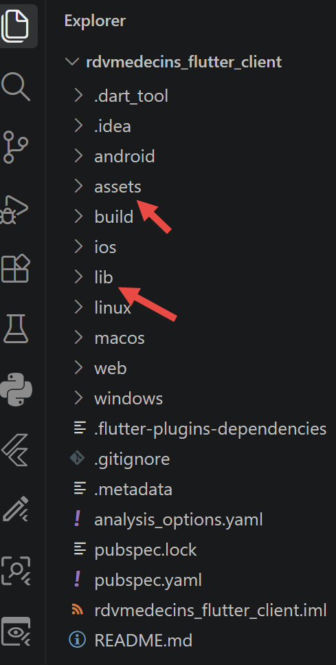
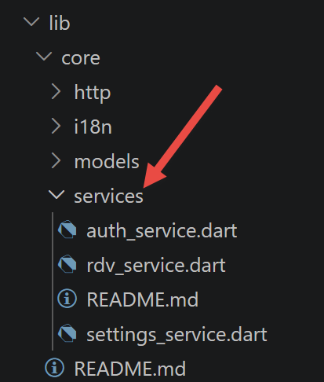
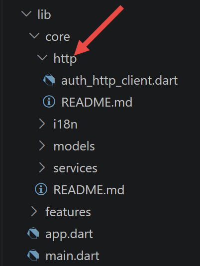
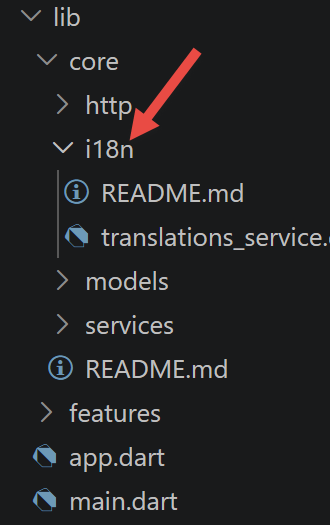
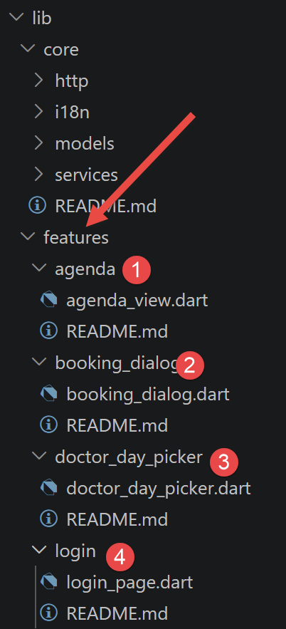
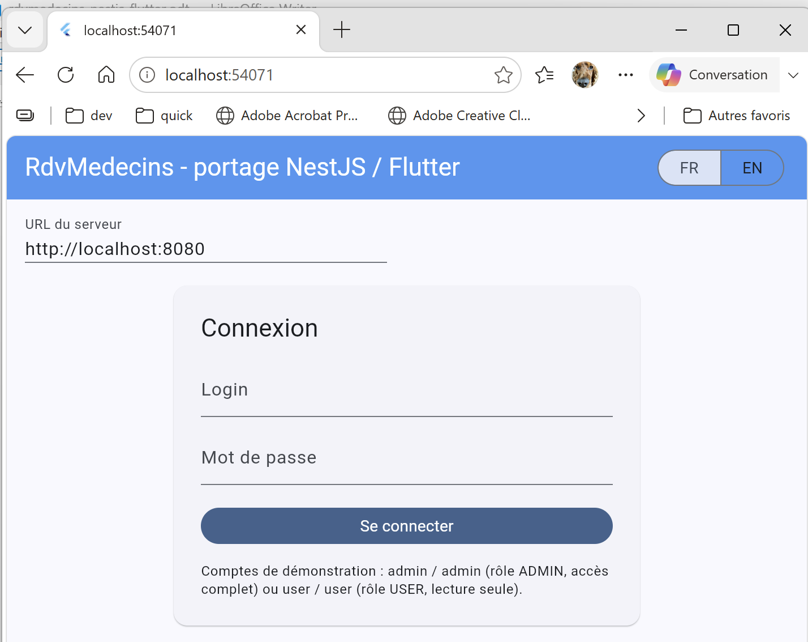
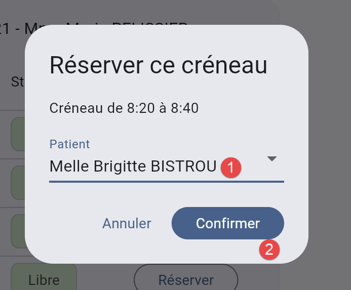
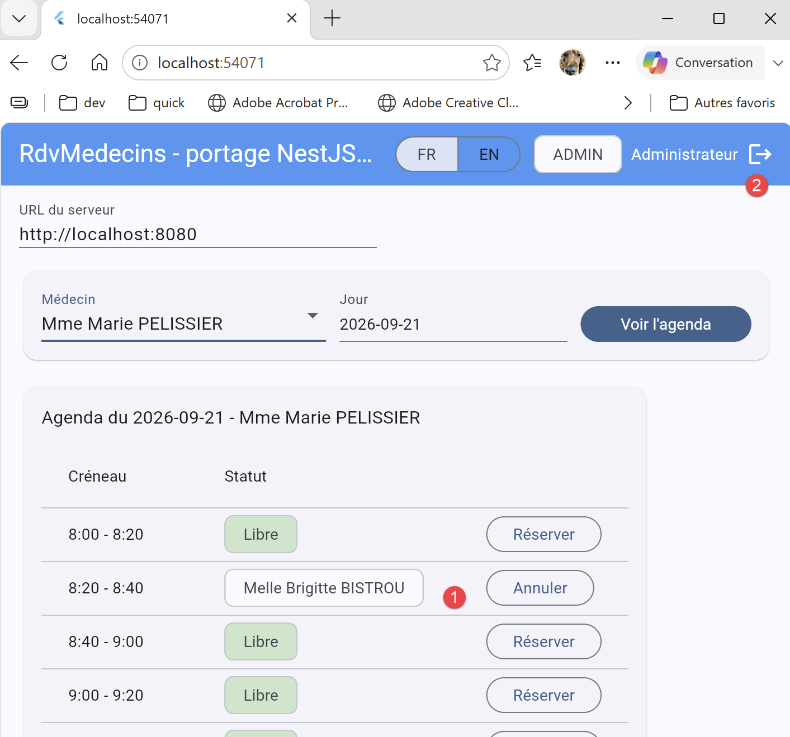

5. Chapitre 4 - Le client Flutter de l'application RdvMedecins
5.1. Rappel de l'architecture

Ce client dialogue avec le serveur [rdvmedecins-nestjs-server] du cours, strictement inchangé, par les mêmes routes HTTP déjà documentées (POST [/login], GET [/getAllMedecins], GET [/getAllClients], GET [/getAgendaMedecinJour/:idMedecin/:jour], POST [/ajouterRv], POST [/supprimerRv]), avec la même enveloppe JSON [{ status, data }] et la même authentification par jeton [JWT] (entête [Authorization: Bearer <jeton>]). Pour cette variante, l'architecture générale gagne un troisième maillon : selon la cible de compilation choisie (cf. chapitre 5), ce n'est plus seulement un navigateur qui exécute le client, mais éventuellement un système d'exploitation mobile ou de bureau qui exécute directement le code [Dart] compilé - le serveur [NestJS], lui, ne voit toujours passer que les mêmes requêtes HTTP, quelle que soit la cible.
5.2. Arborescence du projet

rdvmedecins_flutter_client/
├── pubspec.yaml configuration du projet (dépendances, assets)
├── assets/
│ └── i18n/ dictionnaires de traduction (fr.json, en.json)
└── lib/
├── main.dart point d'entrée (construit les services, les fournit, lance l'app)
├── app.dart widget racine (chef d'orchestre + garde d'authentification)
├── core/
│ ├── models/ classes de données (miroir du JSON échangé avec le serveur)
│ ├── services/ SettingsService, AuthService, RdvService
│ ├── http/ AuthHttpClient (jeton JWT + déconnexion sur 401)
│ └── i18n/ TranslationsService (français/anglais)
└── features/ un widget par fonctionnalité, dont l'écran de connexion
Cette arborescence reprend, dossier pour dossier, celle du client [Vue.js] de ce cours ([core/models], [core/composables] -> [core/services], [core/interceptors] -> [core/http], [features/] inchangé) - un choix délibéré : l'organisation d'une application n'a, la plupart du temps, rien de spécifique à un framework d'interface en particulier.
5.3. Fichiers de configuration du projet
5.3.1. pubspec.yaml
| name: rdvmedecins_flutter_client
description: >
Client Flutter (mobile, bureau et web depuis un seul et même code source)
pour l'application RdvMedecins - portage NestJS / Flutter de ce cours.
publish_to: 'none'
version: 1.0.0+1
environment:
sdk: '>=3.4.0 <4.0.0'
flutter: '>=3.24.0'
dependencies:
flutter:
sdk: flutter
# http : le client HTTP "bas niveau" officiel de l'écosystème Dart - le
# strict équivalent de fetch() utilisé côté Vue.js (auth.interceptor.ts,
# rdv.service.ts). Flutter n'a pas de fetch() intégré au langage : cette
# bibliothèque en tient lieu.
http: ^1.2.2
# provider : la façon la plus répandue d'exposer un état PARTAGÉ à tout un
# arbre de widgets Flutter - le rôle exact que jouait provide()/inject()
# côté Vue.js (settings.composable.ts, auth.composable.ts,
# language.composable.ts). Voir le chapitre "Introduction à Flutter" pour
# la correspondance détaillée.
provider: ^6.1.2
# shared_preferences : un stockage clé/valeur persistant, disponible de la
# MÊME façon sur mobile, bureau ET web - l'équivalent multiplateforme de
# localStorage (qui, lui, n'existe que dans un navigateur).
shared_preferences: ^2.3.2
# intl : formatage de dates (yyyy-MM-dd, cf. DoctorDayPicker) - le même
# rôle que Date.toISOString().slice(0, 10) côté Vue.js/TypeScript, mais
# explicite plutôt qu'un simple découpage de chaîne.
intl: ^0.19.0
dev_dependencies:
flutter_test:
sdk: flutter
flutter_lints: ^4.0.0
flutter:
uses-material-design: true
# les dictionnaires de traduction - l'équivalent de public/i18n/*.json côté
# Vue.js, mais EMBARQUÉS dans le paquet de l'application plutôt que servis
# par un serveur web (cf. Chapitre "Porter l'application" pour la raison
# de cette différence, qui touche justement aux 3 environnements cibles).
assets:
- assets/i18n/
|
Commentons ce code :
- lignes 9-10 : [sdk: '>=3.4.0 <4.0.0'] / [flutter: '>=3.24.0'] — l'équivalent du champ [engines] d'un [package.json] [Node.js] : la fourchette de versions du langage [Dart] et du SDK [Flutter] requise pour ce projet.
- lignes 16-20, 22-27, 29-32, 34-37 : les quatre dépendances de ce client, chacune commentée sur place avec son équivalent côté [Vue.js] — voir aussi la section « Les outils utilisés » de l'introduction.
- ligne 42 : [flutter_lints: ^4.0.0] — l'analogue [Dart] d'[ESLint] : un ensemble de règles de style/qualité vérifiées par [flutter analyze], absent des clients web précédents de ce cours mais généré automatiquement par [flutter create].
- lignes 51-52 : [assets: - assets/i18n/] — déclare EXPLICITEMENT que tout le contenu de [assets/i18n/] doit être embarqué dans le paquet de l'application ; sans cette déclaration, [rootBundle.loadString(...)] (cf. [core/i18n/translations_service.dart] plus loin) échouerait à l'exécution — un fichier qui existe sur le disque au moment de [flutter build] n'est PAS automatiquement inclus dans le paquet final, contrairement à [public/] côté [Vite]/[Vue.js], servi tel quel sans déclaration préalable.
5.4. Démarrage de l'application

5.4.1. lib/main.dart
Portage de [src/main.ts] (client [Vue.js]) : construit les services de ce client, les rend disponibles à tout l'arbre de widgets via [provider], puis démarre l'application.
| // =========================================================================
// main.dart
// -------------------------------------------------------------------------
// Point d'entrée du client Flutter. Équivalent de src/main.ts côté client
// Vue.js de ce cours : ce fichier démarre explicitement l'application
// (runApp(...) ici ; createApp(...).mount(...) côté Vue.js) ET la
// configure.
//
// Vue.js configure son application avec app.provide(clé, valeur), appelé
// directement sur l'instance de l'application - Flutter/provider utilise
// un widget, MultiProvider, posé à la racine de l'arbre (cf. runApp(...)
// ci-dessous) : chaque ChangeNotifierProvider/Provider qu'il contient rend
// une instance disponible à TOUT le sous-arbre qu'il enveloppe, exactement
// comme app.provide(...) le faisait pour tous les composants descendants -
// la même idée, exprimée comme un WIDGET plutôt que comme un appel de
// méthode impératif, parce que TOUT, en Flutter, est un widget (y compris
// la configuration d'un état partagé).
//
// L'ORDRE des constructions compte toujours, pour les mêmes raisons que
// côté Vue.js : AuthService(settings) a besoin que settings existe déjà
// (pour lire apiBaseUrl) ; RdvService a besoin de authHttp ET de settings.
//
// DIFFÉRENCE IMPORTANTE avec Vue.js : createAuthStore(settings) et
// creerLanguageStore() côté Vue.js lisent SYNCHRONEMENT localStorage
// pendant leur construction, avant même le premier rendu. Leurs
// équivalents Flutter (AuthService.init(), TranslationsService.init())
// sont ASYNCHRONES (cf. leurs fichiers respectifs) : main() elle-même doit
// donc devenir une fonction async, et ATTENDRE (await) ces deux
// initialisations AVANT d'appeler runApp(...) - sans quoi le premier écran
// affiché ignorerait une éventuelle session ou langue déjà mémorisée, le
// temps que shared_preferences réponde.
//
// Comme les clients Angular, React et Vue.js de ce cours (une seule page,
// aucune table de routage), ce client Flutter n'utilise QUE la navigation
// minimale fournie par MaterialApp (indispensable à showDialog(), cf.
// features/booking_dialog/booking_dialog.dart) : AppRoot (cf. app.dart)
// affiche soit l'écran de connexion, soit le reste de l'application, selon
// AuthService.estConnecte - un simple if/else Dart suffit, un package de
// routage (go_router ou autre) n'aurait rien apporté pour une application
// à un seul écran.
// =========================================================================
import 'package:flutter/material.dart';
import 'package:provider/provider.dart';
import 'app.dart';
import 'core/http/auth_http_client.dart';
import 'core/i18n/translations_service.dart';
import 'core/services/auth_service.dart';
import 'core/services/rdv_service.dart';
import 'core/services/settings_service.dart';
Future<void> main() async {
// WidgetsFlutterBinding.ensureInitialized() : indispensable dès qu'on
// appelle une API Flutter AVANT runApp(...) (ici, shared_preferences et
// rootBundle.loadString(...) dans TranslationsService.init()) - sans
// cette ligne, ces appels échoueraient au démarrage. Vue.js n'a rien de
// comparable : le navigateur est toujours "prêt" avant même que
// src/main.ts ne s'exécute.
WidgetsFlutterBinding.ensureInitialized();
// 1. SettingsService en premier : AuthService et RdvService en ont besoin
// (apiBaseUrl).
final settings = SettingsService();
// 2. AuthService : reçoit settings directement au constructeur, comme
// creerAuthStore(settingsStore) côté Vue.js - puis init() restaure une
// éventuelle session mémorisée (cf. le commentaire d'en-tête
// ci-dessus sur le caractère asynchrone de cette étape).
final auth = AuthService(settings);
await auth.init();
// 3. la couche HTTP authentifiée, puis le service métier - tous deux
// construits ICI, une seule fois, plutôt qu'à l'intérieur d'un widget
// (où ils seraient reconstruits à chaque rendu) : exactement le même
// principe que creerSettingsStore()/creerAuthStore(...), appelées une
// seule fois avant app.mount(...) côté Vue.js.
final authHttp = AuthHttpClient(auth);
final rdv = RdvService(authHttp, settings);
// 4. TranslationsService : charge le dictionnaire de démarrage (la
// langue mémorisée, ou le français par défaut) - AUCUNE dépendance
// d'ordre avec les étapes précédentes (contrairement à
// creerLanguageStore() côté Vue.js, qui devait attendre
// app.use(i18n) : ce fichier réimplémente tout lui-même, cf.
// core/i18n/translations_service.dart, il n'y a donc pas de plugin
// tiers à installer avant de pouvoir l'utiliser).
final translations = TranslationsService();
await translations.init();
runApp(
// MultiProvider : regroupe plusieurs providers en un seul widget,
// plutôt que de les imbriquer à la main (Provider(...) > Provider(...)
// > Provider(...) > ...) - une lisibilité comparable à la suite
// d'appels "app.provide(SettingsKey, ...); app.provide(AuthKey, ...);
// app.provide(LanguageKey, ...);" côté Vue.js, malgré la différence de
// forme (liste de widgets plutôt que suite d'instructions).
MultiProvider(
providers: [
// .value(...) plutôt que Provider(create: ...) : ces instances
// existent déjà (construites ci-dessus) - .value(...) les rend
// simplement disponibles à l'arbre de widgets, sans en construire
// de nouvelles. ChangeNotifierProvider, spécifiquement, s'abonne en
// plus à notifyListeners() et redessine automatiquement tout
// widget qui aura fait context.watch<...>() sur ce provider (cf.
// lib/app.dart) - le rôle tenu par le caractère "réactif" d'un
// reactive(...) côté Vue.js.
ChangeNotifierProvider.value(value: settings),
ChangeNotifierProvider.value(value: auth),
ChangeNotifierProvider.value(value: translations),
// RdvService n'est PAS un ChangeNotifier (rien, dans ce service,
// ne varie dans le temps une fois construit) : un Provider simple
// suffit, il ne fait que mettre cette instance à disposition, sans
// aucune notion de notification.
Provider.value(value: rdv),
],
child: const RdvMedecinsApp(),
),
);
}
|
Commentons ce code :
- ligne 60 : [WidgetsFlutterBinding.ensureInitialized();] — indispensable dès qu'on appelle une API [Flutter] AVANT [runApp(...)] (ici, [shared_preferences] et [rootBundle.loadString(...)]) — sans cette ligne, ces appels échoueraient au démarrage ; [Vue.js] n'a rien de comparable à prévoir, le navigateur étant toujours « prêt » avant même l'exécution de [src/main.ts].
- lignes 70-71 : [final auth = AuthService(settings); await auth.init();] — DIFFÉRENCE MAJEURE avec [creerAuthStore(settingsStore)] côté [Vue.js], qui lit [localStorage] SYNCHRONEMENT dès sa construction : [AuthService.init()] est explicitement [async], et [main()] elle-même doit donc l'être aussi pour pouvoir l'ATTENDRE avant [runApp(...)] — sans quoi le premier écran affiché ignorerait une session déjà mémorisée, le temps que [shared_preferences] réponde.
- ligne 89 : [await translations.init();] — même remarque que ci-dessus pour la langue mémorisée ; à la différence de [creerLanguageStore()] côté [Vue.js], qui devait attendre [app.use(i18n)], cette étape n'a ICI aucune dépendance d'ordre avec les précédentes : [TranslationsService] réimplémente tout elle-même, sans plugin tiers à installer au préalable.
- lignes 98-116 : [MultiProvider(providers: [...], child: const RdvMedecinsApp())] — l'équivalent, sous forme de WIDGET plutôt que d'appels impératifs, de la suite [app.provide(SettingsKey, ...); app.provide(AuthKey, ...); app.provide(LanguageKey, ...);] côté [Vue.js] : chaque [ChangeNotifierProvider.value(...)] rend une instance déjà construite disponible à tout le sous-arbre.
5.4.2. lib/app.dart
Portage de [src/app/App.vue] : le widget RACINE de l'application (construit par [lib/main.dart]) - le « chef d'orchestre » qui détient l'état métier et réagit aux actions des widgets de [lib/features/], et la « garde » d'authentification.
| // =========================================================================
// app.dart
// -------------------------------------------------------------------------
// Portage de src/app/App.vue (client Vue.js de ce cours) : le widget
// RACINE de l'application (construit par lib/main.dart). Comme dans les
// trois autres variantes de ce cours, c'est lui qui joue le rôle de "chef
// d'orchestre" : il détient l'état de l'application (médecins, clients,
// agenda affiché, dernier médecin/jour recherché...) et réagit aux actions
// des widgets "métier" de lib/features/ pour appeler le serveur NestJS au
// bon moment, via RdvService.
//
// Depuis l'ajout de l'authentification, ce widget joue aussi le rôle de
// "garde" : tant que AuthService.estConnecte vaut false, il n'affiche que
// LoginPage (cf. lib/features/login/) ; toutes les routes du serveur étant
// protégées par JwtAuthGuard, il serait de toute façon inutile (et source
// d'erreurs 401) de charger médecins/clients/agenda avant d'être connecté.
//
// Deux classes, comme dans les autres fichiers "avec état" de ce client :
// RdvMedecinsApp (le MaterialApp - la racine ABSOLUE, cf. lib/main.dart) et
// AppRoot/_AppRootState (l'équivalent réel de App.vue, avec tout son état).
// =========================================================================
import 'package:flutter/material.dart';
import 'package:provider/provider.dart';
import 'core/i18n/translations_service.dart';
import 'core/models/rdv_models.dart';
import 'core/services/auth_service.dart';
import 'core/services/rdv_service.dart';
import 'core/services/settings_service.dart';
import 'features/agenda/agenda_view.dart';
import 'features/booking_dialog/booking_dialog.dart';
import 'features/doctor_day_picker/doctor_day_picker.dart';
import 'features/login/login_page.dart';
// -------------------------------------------------------------------------
// RdvMedecinsApp : la racine Flutter au sens strict - MaterialApp fournit
// le thème, la navigation (Navigator, utilisé par showDialog(), cf.
// features/booking_dialog/booking_dialog.dart) et les traductions système
// (défilement, boîtes de dialogue...). C'est l'équivalent, très
// grossièrement, de ce que index.html + le montage app.mount('#app')
// faisaient ensemble côté Vue.js (src/main.ts) - à ceci près qu'ici, cette
// "coquille" fait elle-même partie du code Dart de l'application, plutôt
// que d'un fichier HTML séparé.
// -------------------------------------------------------------------------
class RdvMedecinsApp extends StatelessWidget {
const RdvMedecinsApp({super.key});
@override
Widget build(BuildContext context) {
return MaterialApp(
debugShowCheckedModeBanner: false,
// appBarTheme explicite : le thème Material 3 par défaut donne à
// AppBar un fond clair (colorScheme.surface) - pour retrouver le
// bandeau bleu à texte blanc de "navbar navbar-dark bg-primary" côté
// Vue.js (cf. App.vue), on fixe ici fond et texte explicitement,
// plutôt que de coder en dur une couleur de texte sur chaque Text()
// individuel de AppRoot ci-dessous (cf. auth.nom, plus bas) - une
// seule source de vérité pour l'apparence du bandeau.
theme: ThemeData(
colorSchemeSeed: Colors.blue,
useMaterial3: true,
appBarTheme: const AppBarTheme(
backgroundColor: Colors.blue,
foregroundColor: Colors.white,
),
),
home: const AppRoot(),
);
}
}
class AppRoot extends StatefulWidget {
const AppRoot({super.key});
@override
State<AppRoot> createState() => _AppRootState();
}
class _AppRootState extends State<AppRoot> {
// --- état de l'application ---------------------------------------------
// l'équivalent direct des ref(...) de App.vue, sous forme de simples
// champs mutables de _AppRootState : setState(...) (cf. les méthodes
// ci-dessous) en tient lieu de la réactivité automatique de Vue.js.
List<Medecin> _medecins = [];
List<Client> _clients = [];
AgendaMedecinJour? _agenda;
String? _erreur;
// on mémorise la dernière recherche (médecin + jour) pour pouvoir
// rafraîchir l'agenda après une réservation ou une annulation - même
// rôle que dernierIdMedecin/dernierJour côté Vue.js.
int? _dernierIdMedecin;
String? _dernierJour;
// référence gardée à demeure vers AuthService, pour pouvoir s'y
// désabonner proprement dans dispose() (cf. plus bas) - voir le
// commentaire d'initState() ci-dessous pour la raison de ce choix.
late final AuthService _auth;
@override
void initState() {
super.initState();
// context.read<AuthService>() : au moment où initState() s'exécute, le
// widget est déjà correctement inséré dans l'arbre (contrairement au
// constructeur, où context n'est pas encore utilisable pour de
// l'injection de dépendances) - mais on n'utilise PAS context.watch(...)
// ici : un StatefulWidget ne doit s'abonner à un provider qu'une seule
// fois, explicitement, jamais à l'intérieur d'initState() avec watch()
// (qui suppose un contexte de build). On garde donc la référence dans
// un champ (_auth) et on s'abonne nous-mêmes avec addListener(...).
_auth = context.read<AuthService>();
_auth.addListener(_onAuthChange);
// équivalent de "watch(() => auth.estConnecte, ..., { immediate: true })"
// côté Vue.js : { immediate: true } déclenche IMMÉDIATEMENT le
// callback, sans attendre un premier changement - utile si une session
// était déjà mémorisée (cf. AuthService.init(), attendu par
// lib/main.dart avant runApp(...)). Vue.js offre cette option
// directement ; Flutter n'a pas de mécanisme équivalent intégré à
// addListener(...), donc on reproduit le même effet À LA MAIN : un
// appel explicite juste après l'abonnement, en plus de l'abonnement
// lui-même.
if (_auth.estConnecte) {
_chargerListesInitiales();
}
}
@override
void dispose() {
// se désabonner est INDISPENSABLE ici : sans cela, _onAuthChange
// continuerait d'être appelée après la destruction de ce widget (par
// exemple lors d'un hot reload ou d'un changement de route), et
// provoquerait une exception au premier setState(...) sur un widget
// démonté. Vue.js n'a rien de comparable à prévoir : watch(...) est
// automatiquement "nettoyé" quand le composant qui l'a créé est détruit.
_auth.removeListener(_onAuthChange);
super.dispose();
}
void _onAuthChange() {
if (_auth.estConnecte) {
_chargerListesInitiales();
}
}
// -----------------------------------------------------------------------
// au moment où l'on devient connecté (connexion réussie, ou session
// restaurée depuis shared_preferences), on charge une bonne fois pour
// toutes les listes de médecins et de clients.
// -----------------------------------------------------------------------
void _chargerListesInitiales() {
final rdv = context.read<RdvService>();
rdv.getAllMedecins().then((resultat) {
if (mounted) setState(() => _medecins = resultat);
}).catchError((Object err) {
if (mounted) setState(() => _erreur = err.toString());
});
rdv.getAllClients().then((resultat) {
if (mounted) setState(() => _clients = resultat);
}).catchError((Object err) {
if (mounted) setState(() => _erreur = err.toString());
});
}
// -----------------------------------------------------------------------
// réagit au bouton "Se déconnecter" : purge la session ET l'état métier
// affiché - sans cela, un nouvel utilisateur qui se connecterait ensuite
// verrait un instant l'agenda du précédent.
// -----------------------------------------------------------------------
Future<void> _onDeconnexion() async {
await _auth.seDeconnecter();
setState(() {
_medecins = [];
_clients = [];
_agenda = null;
_erreur = null;
_dernierIdMedecin = null;
_dernierJour = null;
});
}
// -----------------------------------------------------------------------
// réagit à l'appel de onRechercher(...) du widget DoctorDayPicker
// -----------------------------------------------------------------------
void _onRechercherAgenda(int idMedecin, String jour) {
setState(() {
_erreur = null;
_dernierIdMedecin = idMedecin;
_dernierJour = jour;
});
_chargerAgenda();
}
// -----------------------------------------------------------------------
// réagit à l'appel de onReserver(...) du widget AgendaView : ICI, à la
// différence de Vue.js (qui se contentait d'ouvrir la fenêtre en
// mémorisant creneauEnReservation), on ouvre DIRECTEMENT la boîte de
// dialogue avec showDialog (via ouvrirBookingDialog(...)) et on ATTEND
// son résultat - cf. l'en-tête de booking_dialog.dart pour le détail de
// cette différence structurelle.
// -----------------------------------------------------------------------
Future<void> _onDemandeReservation(CreneauJson creneau) async {
final dernierJour = _dernierJour;
if (dernierJour == null) {
return;
}
final idClient = await ouvrirBookingDialog(context: context, creneau: creneau, clients: _clients);
if (idClient == null) {
return; // l'utilisateur a fermé la boîte de dialogue sans choisir de patient
}
try {
await context.read<RdvService>().ajouterRv(dernierJour, idClient, creneau.id);
_chargerAgenda(); // on rafraîchit l'agenda : le créneau apparaît maintenant occupé
} catch (err) {
if (mounted) setState(() => _erreur = err.toString());
}
}
// -----------------------------------------------------------------------
// réagit à l'appel de onAnnuler(...) du widget AgendaView
// -----------------------------------------------------------------------
Future<void> _onAnnulerRv(RvJson rv) async {
try {
await context.read<RdvService>().supprimerRv(rv.id);
_chargerAgenda(); // on rafraîchit l'agenda : le créneau redevient libre
} catch (err) {
if (mounted) setState(() => _erreur = err.toString());
}
}
void _chargerAgenda() {
final idMedecin = _dernierIdMedecin;
final jour = _dernierJour;
if (idMedecin == null || jour == null) {
return;
}
context.read<RdvService>().getAgendaMedecinJour(idMedecin, jour).then((resultat) {
if (mounted) setState(() => _agenda = resultat);
}).catchError((Object err) {
if (mounted) setState(() => _erreur = err.toString());
});
}
@override
Widget build(BuildContext context) {
// context.watch<...>() sur les TROIS providers dont l'affichage dépend
// directement : chaque appel abonne ce widget aux changements futurs de
// ce provider - si l'un d'eux notifie (notifyListeners()), build(...)
// est appelée de nouveau automatiquement. C'est le mécanisme qui
// remplace, ici, la réactivité automatique de Vue.js évoquée dans
// core/services/settings_service.dart.
final t = context.watch<TranslationsService>().t;
final langue = context.watch<TranslationsService>();
final auth = context.watch<AuthService>();
final settings = context.watch<SettingsService>();
// écran étroit (téléphone en portrait) : la barre de titre est allégée
// (cf. actions: ci-dessous), faute de place pour y afficher tout ce qui
// tient sans peine sur un écran large.
final etroit = MediaQuery.sizeOf(context).width < 600;
return Scaffold(
appBar: AppBar(
title: Text(t('APP.TITLE')),
actions: [
// sélecteur FR/EN : TOUJOURS visible (y compris sur l'écran de
// connexion) - le pendant du <div class="btn-group"> toujours
// affiché côté App.vue.
SegmentedButton<String>(
segments: const [
ButtonSegment(value: 'fr', label: Text('FR')),
ButtonSegment(value: 'en', label: Text('EN')),
],
selected: {langue.langueCourante},
onSelectionChanged: (choix) => langue.changerLangue(choix.first),
showSelectedIcon: false,
),
const SizedBox(width: 12),
// le badge rôle + nom + bouton de déconnexion, eux, ne
// s'affichent qu'une fois connecté (auth.estConnecte) - même
// condition que le <template v-if="auth.estConnecte"> de App.vue.
if (auth.estConnecte) ...[
Chip(label: Text(auth.role?.versChaine() ?? '')),
const SizedBox(width: 8),
// pas de style de couleur codé en dur ici : ce Text() hérite du
// foregroundColor blanc fixé sur appBarTheme (cf. RdvMedecinsApp
// ci-dessus), exactement comme "navbar-dark" côté Bootstrap
// colorait tout son contenu en blanc par défaut.
// sur écran étroit, le nom est masqué : le badge de rôle et le bouton
// de déconnexion suffisent, et la barre de titre tient dans la largeur.
if (!etroit) Text(auth.nom ?? ''),
IconButton(
tooltip: t('APP.LOGOUT'),
icon: const Icon(Icons.logout),
onPressed: _onDeconnexion,
),
],
const SizedBox(width: 8),
],
),
body: SafeArea(
child: SingleChildScrollView(
padding: const EdgeInsets.all(16),
child: Column(
crossAxisAlignment: CrossAxisAlignment.start,
children: [
// URL du serveur : utile aussi bien avant qu'après connexion
// - extrait dans un petit widget privé dédié, _ServerUrlField
// (cf. plus bas), pour les raisons expliquées à côté de sa
// définition.
ConstrainedBox(
constraints: const BoxConstraints(maxWidth: 320),
child: _ServerUrlField(settings: settings, label: t('APP.SERVER_URL_LABEL')),
),
const SizedBox(height: 16),
if (_erreur != null) ...[
Container(
width: double.infinity,
padding: const EdgeInsets.all(12),
decoration: BoxDecoration(
color: Theme.of(context).colorScheme.errorContainer,
borderRadius: BorderRadius.circular(4),
),
child: Text(
_erreur!,
style: TextStyle(color: Theme.of(context).colorScheme.onErrorContainer),
),
),
const SizedBox(height: 16),
],
// pas connecté : rien d'autre que l'écran de connexion -
// l'équivalent exact de "<Login v-if="!auth.estConnecte" />"
// côté Vue.js.
if (!auth.estConnecte)
const LoginPage()
else ...[
// widget 1 : choix du médecin et du jour
DoctorDayPicker(medecins: _medecins, onRechercher: _onRechercherAgenda),
const SizedBox(height: 16),
// widget 2 : affichage de l'agenda - peutModifier masque
// "Réserver"/"Annuler" pour un rôle USER
AgendaView(
agenda: _agenda,
peutModifier: auth.estAdmin,
onReserver: _onDemandeReservation,
onAnnuler: _onAnnulerRv,
),
],
],
),
),
),
);
}
}
// -------------------------------------------------------------------------
// _ServerUrlField : un petit StatefulWidget PRIVÉ dédié au champ "URL du
// serveur". Côté Vue.js, ce champ tient en une seule ligne, directement
// dans le <template> de App.vue (<input v-model="settings.apiBaseUrl">) :
// v-model gère lui-même, en coulisses, la synchronisation entre le champ
// affiché et settings.apiBaseUrl. Flutter n'a pas de liaison bidirectionnelle
// intégrée à TextField (cf. déjà lib/features/login/login_page.dart) : il
// faut un TextEditingController, et donc un possesseur capable de le créer
// et de le libérer (initState/dispose) - un TEXTE ÉDITABLE lié à un
// provider ne peut PAS être un simple StatelessWidget en Flutter, à la
// différence d'un champ Vue.js équivalent, qui n'a besoin d'aucun
// "composant" séparé pour exister.
// -------------------------------------------------------------------------
class _ServerUrlField extends StatefulWidget {
final SettingsService settings;
final String label;
const _ServerUrlField({required this.settings, required this.label});
@override
State<_ServerUrlField> createState() => _ServerUrlFieldState();
}
class _ServerUrlFieldState extends State<_ServerUrlField> {
late final TextEditingController _controller;
@override
void initState() {
super.initState();
_controller = TextEditingController(text: widget.settings.apiBaseUrl);
}
@override
void dispose() {
_controller.dispose();
super.dispose();
}
@override
Widget build(BuildContext context) {
return TextField(
controller: _controller,
decoration: InputDecoration(labelText: widget.label, isDense: true),
// onChanged plutôt qu'onSubmitted : on répercute chaque frappe
// immédiatement sur SettingsService, exactement comme le fait
// v-model côté Vue.js à chaque caractère tapé (pas seulement à la
// validation du formulaire).
onChanged: widget.settings.setApiBaseUrl,
);
}
}
|
Commentons ce code :
- lignes 46-71 : [class RdvMedecinsApp extends StatelessWidget] — la racine [Flutter] au sens strict : [MaterialApp] fournit le thème et la navigation (indispensable à [showDialog(...)], cf. [booking_dialog.dart] plus loin) - l'équivalent, très grossièrement, de ce que [index.html] + [app.mount('#app')] faisaient ensemble côté [Vue.js].
- lignes 60-66 : [appBarTheme: const AppBarTheme(backgroundColor: Colors.blue, foregroundColor: Colors.white)] — reproduit l'apparence de ["navbar navbar-dark bg-primary"] ([Bootstrap], cf. [App.vue]) : un thème [Material 3] par défaut donnerait à [AppBar] un fond clair, il faut donc le fixer explicitement pour retrouver le bandeau bleu à texte blanc déjà connu.
- lignes 96-127 : [initState()] — reproduit, À LA MAIN, l'équivalent de [watch(() => auth.estConnecte, ..., { immediate: true })] côté [Vue.js] (cf. [App.vue]) : [Flutter] n'a pas d'option [immediate] intégrée à [addListener(...)], il faut donc s'abonner PUIS vérifier explicitement l'état courant une première fois - deux étapes là où [Vue.js] n'en demande qu'une.
- lignes 129-139 : [dispose() { _auth.removeListener(_onAuthChange); }] — INDISPENSABLE : sans ce désabonnement, [_onAuthChange] continuerait d'être appelée après la destruction du widget et provoquerait une exception au premier [setState(...)] sur un widget démonté. [Vue.js] n'a rien de comparable à prévoir, [watch(...)] étant automatiquement « nettoyé » à la destruction du composant qui l'a créé.
- lignes 203-218 : [_onDemandeReservation(...)] — LA différence structurelle la plus visible de tout ce client : plutôt que d'ouvrir une « fenêtre » en mémorisant un état booléen (cf. [creneauEnReservation] côté [Vue.js]), ce widget [await] directement le résultat de [ouvrirBookingDialog(...)] - voir le commentaire complet dans [booking_dialog.dart], plus loin ce chapitre.
- lignes 253-256 : quatre [context.watch<...>()] en tête de [build(...)] — ce widget se redessine automatiquement dès que N'IMPORTE LEQUEL de ces quatre services notifie un changement ([notifyListeners()]), exactement le rôle que jouait la réactivité automatique de [Vue.js] pour [auth], [settings] et [langue] dans [App.vue].
- ligne 260 et ligne 291 : [MediaQuery.sizeOf(context).width < 600] — la largeur de l'écran (ou de la fenêtre) sert à alléger la barre de titre sur un téléphone en portrait : le nom de l'utilisateur est masqué ([if (!etroit) Text(...)], un simple [if] Dart au milieu d'une liste de widgets), alors que le badge de rôle et le bouton de déconnexion restent affichés. À la ligne 276, [showSelectedIcon: false] retire la coche que [SegmentedButton] ajoute au choix sélectionné et qui élargissait inutilement le sélecteur [FR]/[EN]. Sans ces deux réglages, les [actions:] de l'[AppBar] dépassent la largeur d'un téléphone en portrait.
- lignes 359-409 : [class _ServerUrlField] — un petit [StatefulWidget] PRIVÉ dédié au champ « URL du serveur ». Côté [Vue.js], ce champ tenait en une seule ligne ([<input v-model="settings.apiBaseUrl">]) : [Flutter] n'a pas de liaison bidirectionnelle intégrée à [TextField], il faut donc un [TextEditingController] et un possesseur capable de le créer/libérer - un texte éditable lié à un provider ne peut PAS être un simple [StatelessWidget] en [Flutter].
5.5. La couche core/models

5.5.1. lib/core/models/rdv_models.dart
Portage de [core/models/rdv.models.ts], lui-même copié tel quel des clients [Angular] et [React] : les classes qui décrivent la forme des données JSON échangées avec le serveur, sans aucune dépendance à [Flutter] — du [Dart] « pur ».
| // =========================================================================
// core/models/rdv_models.dart
// -------------------------------------------------------------------------
// Portage de core/models/rdv.models.ts (client Vue.js de ce cours), lui-
// même copié tel quel des clients Angular et React : les classes Dart qui
// décrivent la forme des données JSON reçues du serveur NestJS. Comme leurs
// homologues TypeScript, ces classes ne dépendent d'aucun framework UI
// (aucun import Flutter ici) - c'est du Dart "pur", au même titre que
// rdv.models.ts était du TypeScript "pur".
//
// DIFFÉRENCE STRUCTURELLE avec TypeScript : une "interface" TypeScript est
// une simple description de FORME, vérifiée uniquement à la compilation -
// à l'exécution, un objet JSON décodé (JSON.parse) est utilisé TEL QUEL,
// sans conversion, et TypeScript "fait confiance" au développeur (cf. le
// "as Reponse<T>" de rdv.service.ts). Dart n'a pas cette notion de typage
// structurel implicite : jsonDecode(...) renvoie toujours des types
// dynamiques (Map<String, dynamic>, List<dynamic>...), qu'il faut
// explicitement convertir en instances de classes Dart via un constructeur
// fromJson(...) - présent sur CHACUNE des classes ci-dessous. C'est plus
// verbeux à écrire une fois, mais la conversion est vérifiée à l'exécution
// (une clé manquante ou d'un mauvais type lève immédiatement une exception
// explicite), là où un mauvais typage TypeScript peut passer inaperçu.
// =========================================================================
// -------------------------------------------------------------------------
// enveloppe commune à toutes les réponses du serveur (cf. Reponse<T> côté
// NestJS, et l'interface Reponse<T> du client Vue.js).
//
// Dart généralise aussi avec des chevrons (<T>), exactement comme
// TypeScript - la grande différence est qu'ici, on ne peut pas se contenter
// d'un "as T" pour convertir le champ [data] : il faut fournir la fonction
// qui sait construire un T à partir de JSON brut (le paramètre
// [parseData] ci-dessous), parce que Dart ne connaît pas T à l'exécution
// (l'effacement de type - "type erasure" - empêche d'écrire "T.fromJson(...)"
// directement).
// -------------------------------------------------------------------------
class Reponse<T> {
final int status; // 0 = succès, autre chose = échec (cf. StatutReponse côté serveur)
final T? data;
Reponse({required this.status, required this.data});
factory Reponse.fromJson(
Map<String, dynamic> json,
T Function(dynamic donneesBrutes) parseData,
) {
final donneesBrutes = json['data'];
return Reponse<T>(
status: json['status'] as int,
data: donneesBrutes == null ? null : parseData(donneesBrutes),
);
}
}
class Medecin {
final int id;
final String titre;
final String nom;
final String prenom;
Medecin({required this.id, required this.titre, required this.nom, required this.prenom});
factory Medecin.fromJson(Map<String, dynamic> json) => Medecin(
id: json['id'] as int,
titre: json['titre'] as String,
nom: json['nom'] as String,
prenom: json['prenom'] as String,
);
}
// [Client] désigne ici un PATIENT du cabinet médical (vocabulaire du
// domaine métier, hérité du document original) - à ne pas confondre avec
// "client HTTP", ni avec ce client Flutter lui-même !
class Client {
final int id;
final String titre;
final String nom;
final String prenom;
Client({required this.id, required this.titre, required this.nom, required this.prenom});
factory Client.fromJson(Map<String, dynamic> json) => Client(
id: json['id'] as int,
titre: json['titre'] as String,
nom: json['nom'] as String,
prenom: json['prenom'] as String,
);
}
// forme "légère" d'un créneau horaire, telle que renvoyée par le serveur
// (cf. getMapForCreneau côté NestJS) : uniquement les champs utiles à l'affichage.
class CreneauJson {
final int id;
final int hDebut;
final int mDebut;
final int hFin;
final int mFin;
CreneauJson({
required this.id,
required this.hDebut,
required this.mDebut,
required this.hFin,
required this.mFin,
});
factory CreneauJson.fromJson(Map<String, dynamic> json) => CreneauJson(
id: json['id'] as int,
hDebut: json['hDebut'] as int,
mDebut: json['mDebut'] as int,
hFin: json['hFin'] as int,
mFin: json['mFin'] as int,
);
}
// forme "légère" d'un rendez-vous (cf. getMapForRv côté NestJS)
class RvJson {
final int id;
final String jour; // format "yyyy-MM-dd"
final Client? client;
final CreneauJson? creneau;
RvJson({required this.id, required this.jour, required this.client, required this.creneau});
factory RvJson.fromJson(Map<String, dynamic> json) => RvJson(
id: json['id'] as int,
jour: json['jour'] as String,
client: json['client'] == null ? null : Client.fromJson(json['client'] as Map<String, dynamic>),
creneau: json['creneau'] == null ? null : CreneauJson.fromJson(json['creneau'] as Map<String, dynamic>),
);
}
// un créneau de l'agenda d'un médecin, libre (rv == null) ou occupé
class CreneauAgenda {
final CreneauJson creneau;
final RvJson? rv;
CreneauAgenda({required this.creneau, required this.rv});
factory CreneauAgenda.fromJson(Map<String, dynamic> json) => CreneauAgenda(
creneau: CreneauJson.fromJson(json['creneau'] as Map<String, dynamic>),
rv: json['rv'] == null ? null : RvJson.fromJson(json['rv'] as Map<String, dynamic>),
);
}
// l'agenda complet d'un médecin pour un jour donné (cf. GET /getAgendaMedecinJour/:idMedecin/:jour)
class AgendaMedecinJour {
final Medecin medecin;
final String jour;
final List<CreneauAgenda> creneaux;
AgendaMedecinJour({required this.medecin, required this.jour, required this.creneaux});
factory AgendaMedecinJour.fromJson(Map<String, dynamic> json) => AgendaMedecinJour(
medecin: Medecin.fromJson(json['medecin'] as Map<String, dynamic>),
jour: json['jour'] as String,
creneaux: (json['creneaux'] as List<dynamic>)
.map((e) => CreneauAgenda.fromJson(e as Map<String, dynamic>))
.toList(),
);
}
// -------------------------------------------------------------------------
// authentification (cf. serveur : src/auth/, en particulier login-resultat.model.ts)
// -------------------------------------------------------------------------
// les deux seuls rôles gérés par l'application - copie conforme du type
// [Role] du serveur (src/entities/user.entity.ts). Là où TypeScript se
// contente d'une union de chaînes ('ADMIN' | 'USER'), Dart possède une
// vraie notion d'énumération (enum) : plus sûr (impossible de fabriquer par
// erreur un Role autre que ces deux valeurs), au prix d'un petit aller-
// retour explicite avec la chaîne JSON ("ADMIN"/"USER") via
// depuisChaine(...)/versChaine() ci-dessous - un TypeScript "type Role =
// 'ADMIN' | 'USER'" n'a besoin d'aucune conversion, une chaîne JSON EST
// déjà, pour lui, une valeur valide du type.
enum Role {
admin,
user;
static Role depuisChaine(String valeur) {
switch (valeur) {
case 'ADMIN':
return Role.admin;
case 'USER':
return Role.user;
default:
throw ArgumentError('Rôle inconnu : $valeur');
}
}
String versChaine() => this == Role.admin ? 'ADMIN' : 'USER';
}
// forme des données renvoyées par POST /login (dans l'enveloppe Reponse<T> habituelle)
class LoginResultat {
final String accessToken;
final String login;
final String nom;
final Role role;
LoginResultat({required this.accessToken, required this.login, required this.nom, required this.role});
factory LoginResultat.fromJson(Map<String, dynamic> json) => LoginResultat(
accessToken: json['accessToken'] as String,
login: json['login'] as String,
nom: json['nom'] as String,
role: Role.depuisChaine(json['role'] as String),
);
}
|
Commentons ce code :
- lignes 11-22 : le commentaire d'en-tête détaille la différence structurelle centrale de ce fichier — une [interface] [TypeScript] n'est vérifiée qu'à la COMPILATION ; [Dart] GARDE ses types à l'exécution, d'où un constructeur [fromJson(...)] explicite sur chaque classe (absent de [rdv.models.ts]).
- lignes 37-53 : [class Reponse<T>] et sa factory [fromJson(json, parseData)] — reçoit une FONCTION ([parseData]) plutôt que de faire confiance à un simple [as Reponse<T>] comme côté [TypeScript] (cf. [rdv.service.ts]) : [Dart] ne connaît pas [T] à l'exécution (effacement de type), il ne peut donc pas écrire lui-même [T.fromJson(...)].
- ligne 71-73 : le commentaire rappelle que [Client] désigne un PATIENT du cabinet médical (vocabulaire du domaine métier) — à ne pas confondre avec « client HTTP », ni avec ce client [Flutter] lui-même, une ambiguïté déjà signalée dans les trois variantes web précédentes.
- lignes 176-192 : [enum Role { admin, user; ... }] — remplace l'union de chaînes [TypeScript] [type Role = 'ADMIN' | 'USER'] par une VRAIE énumération [Dart], avec un aller-retour explicite vers la chaîne JSON ([depuisChaine]/[versChaine]) — plus sûr (impossible de fabriquer un [Role] invalide), au prix d'une conversion qu'une union de chaînes n'a pas besoin de faire.
5.6. La couche core/services

5.6.1. lib/core/services/settings_service.dart
Portage de [core/composables/settings.composable.ts] : garde en mémoire l'URL du serveur [NestJS].
| // =========================================================================
// core/services/settings_service.dart
// -------------------------------------------------------------------------
// Portage de core/composables/settings.composable.ts (client Vue.js de ce
// cours) : un tout petit "store" qui garde en mémoire l'URL du serveur
// NestJS.
//
// Vue.js expose cet état partagé via le couple [provide]/[inject] : un
// objet [reactive(...)] fabriqué une seule fois, puis lu/modifié en place
// par n'importe quel composant descendant. Flutter n'a ni [reactive], ni
// [provide]/[inject] : l'équivalent standard de l'écosystème (et celui
// utilisé dans ce cours) est un ChangeNotifier - une classe Dart ordinaire
// qui, en plus de ses champs, sait PRÉVENIR ses auditeurs (listeners)
// chaque fois qu'un changement doit provoquer un nouvel affichage, via
// l'appel explicite notifyListeners().
//
// La différence essentielle avec Vue.js : [reactive(...)] enveloppe l'objet
// dans un proxy JavaScript qui détecte AUTOMATIQUEMENT chaque écriture de
// propriété (store.apiBaseUrl = ... redessine tout seul les composants qui
// lisent apiBaseUrl). Un ChangeNotifier Dart, lui, ne détecte RIEN tout
// seul : c'est au développeur d'appeler notifyListeners() après chaque
// modification - un peu plus de discipline à la main, en échange d'un
// mécanisme beaucoup plus simple (pas de proxy, pas de "magie") à
// comprendre et à déboguer.
//
// C'est le package [provider] (cf. pubspec.yaml et lib/main.dart) qui joue
// ensuite, autour de ce ChangeNotifier, le rôle de app.provide(...) côté
// Vue.js : il rend cette instance unique disponible à tout le sous-arbre de
// widgets, via context.watch<SettingsService>() (pour "lire et se
// réabonner aux changements", cf. lib/app.dart) ou context.read<...>()
// (pour "lire une fois, sans se réabonner").
// =========================================================================
import 'package:flutter/foundation.dart';
class SettingsService extends ChangeNotifier {
String _apiBaseUrl = 'http://localhost:8080';
String get apiBaseUrl => _apiBaseUrl;
// équivalent de "setApiBaseUrl(url: string)" côté Vue.js - à la différence
// de store.apiBaseUrl = url (une simple affectation, suffisante grâce au
// proxy réactif), on doit ici explicitement notifier les auditeurs après
// avoir changé le champ privé.
void setApiBaseUrl(String url) {
if (url == _apiBaseUrl) {
return; // évite un redessin inutile si la valeur n'a pas réellement changé
}
_apiBaseUrl = url;
notifyListeners();
}
}
|
Commentons ce code :
- lignes 36-39 : [class SettingsService extends ChangeNotifier] avec un champ PRIVÉ ([_apiBaseUrl]) et un accesseur public ([get apiBaseUrl]) — un [ChangeNotifier] est une classe [Dart] ORDINAIRE, sans aucun proxy comme [reactive(...)] côté [Vue.js] : rien ne détecte automatiquement une lecture ou une écriture de propriété.
- lignes 45-51 : [setApiBaseUrl(url)] appelle explicitement [notifyListeners()] APRÈS avoir changé le champ — l'étape manuelle que [store.apiBaseUrl = url] n'avait pas besoin de faire côté [Vue.js], le proxy réactif s'en chargeant tout seul.
5.6.2. lib/core/services/auth_service.dart
Portage de [core/composables/auth.composable.ts] : gère la connexion (POST [/login]), garde le jeton [JWT] et le fait survivre à un redémarrage grâce à [shared_preferences].
| // =========================================================================
// core/services/auth_service.dart
// -------------------------------------------------------------------------
// Portage de core/composables/auth.composable.ts (client Vue.js de ce
// cours) : gère la connexion de l'utilisateur, appelle POST /login, garde
// le jeton JWT reçu (et l'identité/rôle qui l'accompagnent), et le fait
// survivre à un redémarrage de l'application grâce à shared_preferences -
// l'équivalent multiplateforme de localStorage (cf. plus bas).
//
// Comme côté Vue.js, c'est le seul autre endroit de l'application, avec
// core/services/rdv_service.dart, qui parle HTTP au serveur - une
// exception assumée à la règle "un seul endroit qui parle HTTP", qui
// reflète, côté client, la séparation déjà faite côté serveur entre
// RdvMedecinsController (métier) et AuthController (authentification).
//
// DIFFÉRENCE IMPORTANTE avec Vue.js : lireSessionStockee() (côté Vue.js)
// est SYNCHRONE - localStorage.getItem(...) renvoie sa valeur
// immédiatement, avant même le premier rendu de l'application. shared_
// preferences, lui, est TOUJOURS asynchrone (SharedPreferences.getInstance()
// renvoie un Future), même sur les plateformes où le stockage sous-jacent
// est en réalité un fichier local quasi instantané à lire : l'API Dart ne
// distingue pas ces cas, par cohérence entre TOUTES les plateformes (sur
// le web, ce même appel s'appuie sur window.localStorage, mais l'API Dart
// reste asynchrone pour rester identique aux autres cibles). Conséquence
// concrète : on ne peut plus, comme côté Vue.js, lire la session déjà
// stockée AVANT le montage de l'arbre de widgets - il faut un [init()]
// explicitement asynchrone, appelé (et ATTENDU avec await) depuis
// lib/main.dart avant runApp(...), pour éviter que l'écran de connexion ne
// "clignote" une fraction de seconde avant que la session ne soit restaurée.
// =========================================================================
import 'dart:convert';
import 'package:flutter/foundation.dart';
import 'package:http/http.dart' as http;
import 'package:shared_preferences/shared_preferences.dart';
import '../models/rdv_models.dart';
import 'settings_service.dart';
const String _cleStockage = 'rdvmedecins.session';
class AuthService extends ChangeNotifier {
// reçu au constructeur plutôt qu'obtenu par injection Flutter : à ce
// stade (cf. lib/main.dart), aucun widget n'existe encore, donc rien de
// tel que context.read<SettingsService>() ne serait possible - exactement
// la même raison que celle documentée dans creerAuthStore(settings) côté
// Vue.js (src/main.ts), qui reçoit lui aussi settingsStore en paramètre
// de fonction plutôt que par inject().
final SettingsService settings;
AuthService(this.settings);
bool estConnecte = false;
String? login;
String? nom;
Role? role;
String? accessToken;
bool get estAdmin => role == Role.admin;
// -----------------------------------------------------------------------
// à appeler UNE SEULE fois, dans lib/main.dart, AVANT runApp(...) : relit
// une éventuelle session déjà mémorisée lors d'un lancement précédent de
// l'application - équivalent de lireSessionStockee() côté Vue.js, mais
// explicitement asynchrone (cf. l'en-tête de ce fichier) plutôt qu'appelé
// à l'intérieur même du constructeur du store.
// -----------------------------------------------------------------------
Future<void> init() async {
try {
final prefs = await SharedPreferences.getInstance();
final brut = prefs.getString(_cleStockage);
if (brut == null) {
return; // pas de session mémorisée : on reste "non connecté", valeurs par défaut ci-dessus
}
final session = jsonDecode(brut) as Map<String, dynamic>;
_appliquerSessionLocale(
accessToken: session['accessToken'] as String,
login: session['login'] as String,
nom: session['nom'] as String,
role: Role.depuisChaine(session['role'] as String),
);
} catch (_) {
// shared_preferences peut être indisponible, ou contenir une valeur
// corrompue - dans ce cas, comme côté Vue.js (try/catch de
// lireSessionStockee()), on considère simplement qu'il n'y a pas de
// session, plutôt que de faire planter le démarrage de l'application.
}
// pas de notifyListeners() ici : init() est attendu (await) avant
// runApp(...) dans lib/main.dart, donc aucun widget n'écoute encore ce
// ChangeNotifier au moment où cette méthode s'exécute - notifier ne
// servirait à rien (et lèverait même une exception, un ChangeNotifier
// Flutter interdisant notifyListeners() avant d'avoir au moins un
// auditeur dans certaines configurations de debug).
}
// -----------------------------------------------------------------------
// équivalent de : POST /login corps JSON { login, password }
// -----------------------------------------------------------------------
Future<LoginResultat> seConnecter(String login, String password) async {
final reponseHttp = await http.post(
Uri.parse('${settings.apiBaseUrl}/login'),
headers: {'Content-Type': 'application/json'},
body: jsonEncode({'login': login, 'password': password}),
);
final enveloppe = Reponse<LoginResultat>.fromJson(
jsonDecode(reponseHttp.body) as Map<String, dynamic>,
(donnees) => LoginResultat.fromJson(donnees as Map<String, dynamic>),
);
if (enveloppe.status != 0 || enveloppe.data == null) {
throw Exception('Échec de connexion');
}
final resultat = enveloppe.data!;
await _appliquerSessionEtPersister(resultat);
return resultat;
}
// -----------------------------------------------------------------------
// déconnexion : purement locale (pas d'appel serveur - un jeton JWT ne se
// "révoque" pas côté serveur dans ce portage, il expire de lui-même après
// JWT_EXPIRES_IN, cf. serveur .env). Appelée aussi bien par un clic sur
// "Se déconnecter" (cf. lib/app.dart) que par core/http/auth_http_client.dart
// lorsqu'une requête protégée reçoit un 401.
// -----------------------------------------------------------------------
Future<void> seDeconnecter() async {
login = null;
nom = null;
role = null;
accessToken = null;
estConnecte = false;
notifyListeners();
try {
final prefs = await SharedPreferences.getInstance();
await prefs.remove(_cleStockage);
} catch (_) {
// là encore, un échec de purge du stockage ne doit pas empêcher la
// déconnexion côté application, déjà effective ci-dessus.
}
}
// met à jour les champs réactifs SANS toucher au stockage - utilisé par
// init() (qui vient justement DE LIRE le stockage, inutile de le réécrire).
void _appliquerSessionLocale({
required String accessToken,
required String login,
required String nom,
required Role role,
}) {
this.accessToken = accessToken;
this.login = login;
this.nom = nom;
this.role = role;
estConnecte = true;
}
// met à jour les champs réactifs ET persiste la session - utilisé par
// seConnecter() ci-dessus. Regroupe ce que appliquerSession(...) faisait
// en un seul bloc côté Vue.js (état réactif + localStorage écrits
// ensemble) ; ici, les deux opérations sont séparées parce que l'écriture
// est asynchrone (await prefs.setString(...)) alors que la mise à jour
// des champs, elle, doit se faire IMMÉDIATEMENT et de façon synchrone
// (notifyListeners() doit suivre l'affectation des champs sans attendre
// I/O disque) - inverser l'ordre retarderait inutilement le rafraîchissement
// de l'interface.
Future<void> _appliquerSessionEtPersister(LoginResultat resultat) async {
_appliquerSessionLocale(
accessToken: resultat.accessToken,
login: resultat.login,
nom: resultat.nom,
role: resultat.role,
);
notifyListeners();
try {
final prefs = await SharedPreferences.getInstance();
await prefs.setString(
_cleStockage,
jsonEncode({
'accessToken': resultat.accessToken,
'login': resultat.login,
'nom': resultat.nom,
'role': resultat.role.versChaine(),
}),
);
} catch (_) {
// la session reste valide EN MÉMOIRE pour cette exécution de
// l'application même si la persistance échoue (quota dépassé,
// stockage en lecture seule...) - seul un futur redémarrage de
// l'application en pâtirait (l'utilisateur devrait se reconnecter).
}
}
}
|
Commentons ce code :
- lignes 16-29 : le commentaire d'en-tête détaille la différence la plus importante de ce fichier — [lireSessionStockee()] côté [Vue.js] est SYNCHRONE ; [shared_preferences] est TOUJOURS asynchrone, quelle que soit la plateforme, d'où un [init()] explicitement [async], attendu par [lib/main.dart] AVANT [runApp(...)].
- lignes 69-95 : [Future<void> init() async { ... }] — relit une éventuelle session mémorisée, protégée par un [try/catch] — même précaution que le [try/catch] de [lireSessionStockee()] côté [Vue.js] (stockage indisponible ou valeur corrompue).
- lignes 100-116 : [seConnecter(login, password)] — appelle POST [/login] avec le package [http] (l'équivalent de [fetch]), lève une exception [Dart] classique ([throw Exception(...)]) en cas d'échec — interceptée plus loin par un [try/catch] [Dart], exactement comme le [throw new Error(...)] de [auth.composable.ts] l'était par un [.catch(...)] [JavaScript].
- lignes 165-190 : [_appliquerSessionEtPersister(...)] — met à jour les champs ET appelle [notifyListeners()] AVANT d'écrire dans [shared_preferences] : l'ordre est volontaire — l'interface doit se rafraîchir IMMÉDIATEMENT, sans attendre une écriture disque asynchrone, là où [appliquerSession(...)] côté [Vue.js] faisait les deux en une seule instruction synchrone.
5.6.3. lib/core/services/rdv_service.dart
Portage de [core/services/rdv.service.ts] : les cinq appels métier au serveur, construits sur [core/http/auth_http_client.dart] (ci-après) plutôt que sur le package [http] directement.
| // =========================================================================
// core/services/rdv_service.dart
// -------------------------------------------------------------------------
// Portage de core/services/rdv.service.ts (client Vue.js de ce cours) : la
// couche [Services] du client Flutter - le SEUL endroit de l'application
// (avec core/services/auth_service.dart pour la connexion elle-même) qui
// parle HTTP avec le serveur NestJS.
//
// Vue.js expose ce service comme un COMPOSABLE (useRdvService()), lui-même
// bâti sur deux autres composables (useAuthFetch(), useSettings()).
// Flutter/Dart n'ayant ni composable ni injection de dépendances intégrée
// au langage, ce fichier redevient une CLASSE ordinaire, construite une
// seule fois dans lib/main.dart avec ses deux dépendances passées au
// constructeur - exactement le même principe que core/http/auth_http_client.dart,
// et la façon la plus directe de porter "un ensemble de fonctions qui
// dépendent d'autre chose" quand le langage cible n'offre pas de composable.
// =========================================================================
import 'dart:convert';
import 'package:http/http.dart' as http;
import '../http/auth_http_client.dart';
import '../models/rdv_models.dart';
import 'settings_service.dart';
class RdvService {
final AuthHttpClient authHttp;
final SettingsService settings;
RdvService(this.authHttp, this.settings);
// -----------------------------------------------------------------------
// fonction privée commune : toutes les réponses du serveur ont la forme
// { status, data } (cf. core/models/rdv_models.dart). On centralise ICI,
// une seule fois, la règle « si status != 0, c'est une erreur » plutôt
// que de la répéter dans chacune des méthodes ci-dessous - exactement le
// rôle de extraire<T>(...) côté Vue.js.
//
// [parseData] est le même genre de paramètre que celui déjà rencontré
// dans Reponse.fromJson(...) (cf. rdv_models.dart) : la fonction qui sait
// reconstruire un T à partir du JSON brut du champ [data], puisque Dart
// ne peut pas le faire tout seul (pas de "T.fromJson(...)" générique).
// -----------------------------------------------------------------------
T _extraire<T>(http.Response reponseHttp, T Function(dynamic donneesBrutes) parseData) {
final enveloppe = Reponse<T>.fromJson(
jsonDecode(reponseHttp.body) as Map<String, dynamic>,
parseData,
);
if (enveloppe.status != 0) {
// on transforme l'erreur "métier" du serveur en une exception Dart
// classique, que les widgets appelants pourront intercepter avec un
// simple try/catch (cf. lib/app.dart) - exactement comme le
// "throw new Error(...)" de rdv.service.ts, intercepté par les
// .catch(...) de src/app/App.vue.
throw Exception("Le serveur a répondu avec le statut d'erreur ${enveloppe.status}");
}
return enveloppe.data as T;
}
// -----------------------------------------------------------------------
// équivalent de : GET /getAllMedecins
// -----------------------------------------------------------------------
Future<List<Medecin>> getAllMedecins() async {
final reponseHttp = await authHttp.get(Uri.parse('${settings.apiBaseUrl}/getAllMedecins'));
return _extraire<List<Medecin>>(
reponseHttp,
(donnees) => (donnees as List<dynamic>).map((e) => Medecin.fromJson(e as Map<String, dynamic>)).toList(),
);
}
// -----------------------------------------------------------------------
// équivalent de : GET /getAllClients
// -----------------------------------------------------------------------
Future<List<Client>> getAllClients() async {
final reponseHttp = await authHttp.get(Uri.parse('${settings.apiBaseUrl}/getAllClients'));
return _extraire<List<Client>>(
reponseHttp,
(donnees) => (donnees as List<dynamic>).map((e) => Client.fromJson(e as Map<String, dynamic>)).toList(),
);
}
// -----------------------------------------------------------------------
// équivalent de : GET /getAgendaMedecinJour/{idMedecin}/{jour}
// -----------------------------------------------------------------------
Future<AgendaMedecinJour> getAgendaMedecinJour(int idMedecin, String jour) async {
final reponseHttp = await authHttp.get(
Uri.parse('${settings.apiBaseUrl}/getAgendaMedecinJour/$idMedecin/$jour'),
);
return _extraire<AgendaMedecinJour>(
reponseHttp,
(donnees) => AgendaMedecinJour.fromJson(donnees as Map<String, dynamic>),
);
}
// -----------------------------------------------------------------------
// équivalent de : POST /ajouterRv corps JSON { jour, idClient, idCreneau }
// -----------------------------------------------------------------------
Future<RvJson> ajouterRv(String jour, int idClient, int idCreneau) async {
final reponseHttp = await authHttp.post(
Uri.parse('${settings.apiBaseUrl}/ajouterRv'),
body: jsonEncode({'jour': jour, 'idClient': idClient, 'idCreneau': idCreneau}),
);
return _extraire<RvJson>(reponseHttp, (donnees) => RvJson.fromJson(donnees as Map<String, dynamic>));
}
// -----------------------------------------------------------------------
// équivalent de : POST /supprimerRv corps JSON { idRv }
// -----------------------------------------------------------------------
Future<void> supprimerRv(int idRv) async {
final reponseHttp = await authHttp.post(
Uri.parse('${settings.apiBaseUrl}/supprimerRv'),
body: jsonEncode({'idRv': idRv}),
);
_extraire<Object?>(reponseHttp, (donnees) => donnees);
}
}
|
Commentons ce code :
- lignes 27-31 : [class RdvService { final AuthHttpClient authHttp; final SettingsService settings; RdvService(this.authHttp, this.settings); }] — redevient une CLASSE ORDINAIRE, construite une seule fois dans [lib/main.dart] avec ses dépendances passées au constructeur, là où [Vue.js] utilisait le COMPOSABLE [useRdvService()], lui-même bâti sur deux autres composables.
- lignes 45-59 : [T _extraire<T>(reponseHttp, parseData)] — centralise, une seule fois, la règle « si [status != 0], c'est une erreur », exactement le rôle de [extraire<T>(...)] côté [Vue.js] — le paramètre [parseData] est le même genre de fonction déjà rencontrée dans [Reponse.fromJson(...)].
- lignes 99-105 : [ajouterRv(jour, idClient, idCreneau)] — [jsonEncode({...})] construit le corps JSON de la requête POST, l'équivalent [Dart] de [JSON.stringify({...})] côté [Vue.js].
- lignes 110-116 : [Future<void> supprimerRv(int idRv) async { ... }] — appelle [_extraire<Object?>(...)] sans utiliser son résultat : le serveur renvoie [Reponse.ok(null)] pour cette route, il n'y a donc rien à typer plus précisément — le même choix que [extraire<null>(reponseHttp)] côté [Vue.js].
5.7. La couche core/http

5.7.1. lib/core/http/auth_http_client.dart
Portage de [core/interceptors/auth.interceptor.ts] : ajoute le jeton [JWT] à chaque requête protégée, déconnecte l'utilisateur sur une réponse 401.
| // =========================================================================
// core/http/auth_http_client.dart
// -------------------------------------------------------------------------
// Portage de core/interceptors/auth.interceptor.ts (client Vue.js de ce
// cours). Ce fichier fait deux choses, exactement comme son homologue
// Vue.js (lui-même portage des clients Angular et React) :
// 1. ajoute l'entête "Authorization: Bearer <jeton>" à chaque requête, si
// l'utilisateur est connecté (cf. AuthService.accessToken) ;
// 2. si le serveur répond 401 (jeton absent, invalide ou expiré),
// déconnecte proprement l'utilisateur côté client.
//
// [fetch] (utilisé côté Vue.js et React) et le [HttpClient] d'Angular n'ont
// pas d'équivalent DIRECT en Dart : le package [http] (cf. pubspec.yaml)
// fournit des fonctions libres (http.get(...), http.post(...)) plutôt
// qu'un objet à intercepter globalement. Le portage reste néanmoins fidèle
// en ESPRIT à useAuthFetch() : plutôt qu'une fonction composable renvoyant
// une "fetch enrichie", on écrit ici une VRAIE CLASSE, [AuthHttpClient],
// dont les méthodes get(...)/post(...) jouent exactement le même rôle -
// tout code qui veut parler au serveur (ici, uniquement
// core/services/rdv_service.dart) appelle CES méthodes plutôt que le
// package http directement.
//
// Écrire une classe plutôt qu'une fonction composable est un choix
// naturel en Dart/Flutter : contrairement à un <script setup> Vue.js (qui
// ne s'exécute qu'une fois par instance de composant, cf. le commentaire de
// auth.interceptor.ts), un ChangeNotifier ou une classe de service Dart
// n'a pas de "corps exécuté à chaque rendu" dont il faudrait se méfier -
// aucun équivalent de useCallback() n'est donc nécessaire ici non plus,
// mais pour une raison différente : il n'y a tout simplement pas de
// fonction "recréée à chaque rendu" en premier lieu, la classe n'étant
// construite qu'une seule fois par lib/main.dart (cf. plus bas).
// =========================================================================
import 'dart:async' show unawaited;
import 'package:http/http.dart' as http;
import '../services/auth_service.dart';
class AuthHttpClient {
final AuthService auth;
final http.Client _client = http.Client();
AuthHttpClient(this.auth);
Future<http.Response> get(Uri url) => _envoyer(() => _client.get(url, headers: _entetes()));
Future<http.Response> post(Uri url, {required Object body}) => _envoyer(
() => _client.post(
url,
headers: {..._entetes(), 'Content-Type': 'application/json'},
body: body,
),
);
// construit les entêtes communes à toute requête protégée - l'équivalent
// du "new Headers(options.headers); if (auth.accessToken) {...}" côté
// Vue.js, mais sous forme d'une simple Map<String, String> (le type
// attendu par le package http, plus simple ici qu'une classe Headers).
Map<String, String> _entetes() {
final accessToken = auth.accessToken;
return accessToken == null ? {} : {'Authorization': 'Bearer $accessToken'};
}
// factorise ce que get(...) et post(...) ont en commun : exécuter l'appel
// HTTP puis, si la réponse est 401, déconnecter l'utilisateur - la
// fonction [appel] reçue en paramètre joue le rôle du "...options"
// transmis par fetch(chemin, { ...options, headers: entetes }) côté
// Vue.js : on ne connaît pas encore, à cet endroit, s'il s'agit d'un GET
// ou d'un POST, seulement qu'il faut l'exécuter puis examiner sa réponse.
Future<http.Response> _envoyer(Future<http.Response> Function() appel) async {
final reponse = await appel();
// un 401 en cours de session signifie que le jeton n'est plus valide
// (expiré, ou serveur redémarré) : on déconnecte proprement le client
// plutôt que de laisser l'application dans un état incohérent (connecté
// en apparence, mais dont plus aucune requête n'aboutit). On ne fait
// pas de "await" sur seDeconnecter() : la réponse HTTP (même en erreur)
// doit être renvoyée à l'appelant sans attendre la fin de la purge du
// stockage local, qui se termine de son côté en tâche de fond.
if (reponse.statusCode == 401) {
unawaited(auth.seDeconnecter());
}
return reponse;
}
}
|
Commentons ce code :
- lignes 12-31 : le commentaire d'en-tête explique le choix d'une CLASSE ([AuthHttpClient]) plutôt que d'un composable — [fetch] ([Vue.js]/[React]) et [HttpClient] ([Angular]) n'ont pas d'équivalent direct en [Dart] ; le package [http] fournit des fonctions libres plutôt qu'un objet unique à intercepter globalement.
- lignes 46-54 : [get(...)]/[post(...)] — les deux seules méthodes que [rdv_service.dart] appelle, jamais le package [http] directement.
- lignes 60-63 : [_entetes()] — construit [{'Authorization': 'Bearer $accessToken'}] si l'utilisateur est connecté, l'équivalent du [new Headers(options.headers); if (auth.accessToken) {...}] côté [Vue.js], mais sous forme d'une simple [Map<String, String>].
- lignes 71-84 : [_envoyer(appel)] — factorise ce que [get(...)] et [post(...)] ont en commun ; [unawaited(auth.seDeconnecter())] documente EXPLICITEMENT qu'on choisit de ne pas attendre ce [Future] — la réponse HTTP (même en erreur) doit être renvoyée à l'appelant sans attendre la fin de la purge du stockage local.
5.8. La couche core/i18n

5.8.1. lib/core/i18n/translations_service.dart
Portage FUSIONNÉ de [src/i18n.ts] ET de [core/composables/language.composable.ts] : le passage français/anglais de l'interface, réimplémenté sans bibliothèque tierce (cf. le commentaire d'en-tête du fichier pour la raison de ce choix).
| // =========================================================================
// core/i18n/translations_service.dart
// -------------------------------------------------------------------------
// Portage FUSIONNÉ de src/i18n.ts (configuration vue-i18n) ET de
// core/composables/language.composable.ts (client Vue.js de ce cours).
// Vue.js sépare les deux parce que vue-i18n, une bibliothèque tierce déjà
// riche en fonctionnalités (pluralisation, formats de date/nombre...),
// fait tout le travail de traduction proprement dit ; language.composable.ts
// se contente d'y ajouter la mémorisation du choix de langue dans
// localStorage. Flutter n'a pas d'équivalent direct de vue-i18n/react-
// i18next/@ngx-translate/core installé par défaut : plutôt que d'ajouter
// une dépendance supplémentaire, ce fichier réimplémente en quelques
// lignes exactement le sous-ensemble utilisé par ce cours - un
// dictionnaire à clés pointées ("LOGIN.TITLE") et une fonction t(cle).
//
// DIFFÉRENCE DE PLATEFORME IMPORTANTE (cf. aussi Chapitre "Porter
// l'application vers mobile, bureau et web") : src/i18n.ts va chercher
// chaque dictionnaire par un fetch("/i18n/{langue}.json") - une URL
// relative, qui suppose un SERVEUR WEB servant les fichiers du client
// (Vite en développement, un serveur statique une fois construit). Une
// application Flutter mobile ou bureau n'a PAS DE SERVEUR WEB qui la sert
// : le code ET ses ressources statiques (ici, les fichiers JSON) sont
// EMBARQUÉS ensemble dans un seul paquet installé sur l'appareil (.apk,
// .app, .exe...). C'est pourquoi ce fichier utilise rootBundle.loadString(...)
// - l'API Flutter qui lit un fichier déclaré dans la section [assets] de
// pubspec.yaml directement depuis ce paquet - plutôt qu'un appel réseau.
// Sur la cible web, rootBundle s'appuie en coulisses sur une vraie requête
// HTTP vers les fichiers publiés à côté de l'application, mais ce détail
// reste invisible ici : le MÊME code Dart fonctionne, sans condition de
// plateforme, sur les 3 environnements - exactement l'argument central de
// ce chapitre.
// =========================================================================
import 'dart:convert';
import 'package:flutter/foundation.dart';
import 'package:flutter/services.dart' show rootBundle;
import 'package:shared_preferences/shared_preferences.dart';
const String _cleStockage = 'rdvmedecins.langue';
const String _langueParDefaut = 'fr';
class TranslationsService extends ChangeNotifier {
String langueCourante = _langueParDefaut;
// dictionnaires déjà chargés (évite de relire un fichier d'assets déjà vu
// pendant la session) - même optimisation que dictionnairesCharges côté
// Vue.js (src/i18n.ts), mais ici on garde directement le dictionnaire
// décodé plutôt qu'un simple Set de langues déjà vues : Vue.js pouvait se
// contenter d'un Set parce que vue-i18n garde LUI-MÊME les dictionnaires
// chargés en mémoire (setLocaleMessage) ; n'ayant pas de bibliothèque
// équivalente ici, ce rôle de cache doit être tenu directement par ce
// fichier.
final Map<String, Map<String, dynamic>> _dictionnaires = {};
// -----------------------------------------------------------------------
// à appeler UNE SEULE fois, dans lib/main.dart, AVANT runApp(...) :
// restaure la langue mémorisée lors d'un lancement précédent (s'il y en a
// une) et charge son dictionnaire - équivalent du bloc de fin de
// creerLanguageStore() côté Vue.js (la lecture de langueMemorisee dans
// localStorage), mais rendu explicitement asynchrone pour les mêmes
// raisons déjà documentées dans core/services/auth_service.dart
// (shared_preferences est TOUJOURS asynchrone, contrairement à
// localStorage).
// -----------------------------------------------------------------------
Future<void> init() async {
String langueDepart = _langueParDefaut;
try {
final prefs = await SharedPreferences.getInstance();
langueDepart = prefs.getString(_cleStockage) ?? _langueParDefaut;
} catch (_) {
// pas de préférence lisible : on démarre en français, comme côté
// Vue.js (locale: 'fr' dans createI18n({...})).
}
await _chargerDictionnaire(langueDepart);
langueCourante = langueDepart;
// pas de notifyListeners() ici, pour la même raison que dans
// AuthService.init() : cette méthode est attendue (await) avant
// runApp(...), aucun widget n'écoute donc encore ce ChangeNotifier.
}
// -----------------------------------------------------------------------
// équivalent de : changerLangue(langue) côté Vue.js (déclenché par les
// boutons FR/EN de lib/app.dart, cf. plus loin ce chapitre).
// -----------------------------------------------------------------------
Future<void> changerLangue(String langue) async {
if (langue == langueCourante) {
return;
}
await _chargerDictionnaire(langue);
langueCourante = langue;
notifyListeners(); // ici, en revanche, l'application tourne déjà : on notifie bien
try {
final prefs = await SharedPreferences.getInstance();
await prefs.setString(_cleStockage, langue);
} catch (_) {
// le changement de langue reste effectif pour cette exécution même si
// la mémorisation échoue - seul un futur redémarrage en pâtirait.
}
}
// -----------------------------------------------------------------------
// équivalent de : chargerDictionnaire(langue) côté Vue.js - même
// principe de cache (dictionnairesCharges), mais lecture d'un asset
// embarqué plutôt qu'un fetch() réseau (cf. l'en-tête de ce fichier).
// -----------------------------------------------------------------------
Future<void> _chargerDictionnaire(String langue) async {
if (_dictionnaires.containsKey(langue)) {
return; // déjà chargé lors d'un précédent changement de langue
}
final contenu = await rootBundle.loadString('assets/i18n/$langue.json');
_dictionnaires[langue] = jsonDecode(contenu) as Map<String, dynamic>;
}
// -----------------------------------------------------------------------
// la fonction de traduction elle-même - appelée t('LOGIN.TITLE') depuis
// les widgets (cf. lib/features/...), exactement comme t('LOGIN.TITLE')
// côté Vue.js (useI18n().t). La clé est "pointée" (un point sépare
// chaque niveau) : on descend donc dans le dictionnaire JSON imbriqué un
// segment à la fois, plutôt que d'aplatir le dictionnaire une bonne fois
// pour toutes comme le fait vue-i18n en interne - un choix qui reste
// largement suffisant pour la taille de ces deux dictionnaires.
// -----------------------------------------------------------------------
String t(String cle) {
final dictionnaire = _dictionnaires[langueCourante];
if (dictionnaire == null) {
return cle; // dictionnaire pas encore chargé : on affiche la clé elle-même, en dernier recours
}
dynamic valeurCourante = dictionnaire;
for (final segment in cle.split('.')) {
if (valeurCourante is Map<String, dynamic> && valeurCourante.containsKey(segment)) {
valeurCourante = valeurCourante[segment];
} else {
return cle; // clé introuvable : même repli que ci-dessus
}
}
return valeurCourante is String ? valeurCourante : cle;
}
}
|
Commentons ce code :
- lignes 16-31 : le commentaire d'en-tête détaille la DIFFÉRENCE DE PLATEFORME la plus importante de tout ce client — [src/i18n.ts] va chercher chaque dictionnaire par [fetch("/i18n/{langue}.json")], une URL qui suppose un SERVEUR WEB ; une application mobile ou bureau n'en a pas, d'où [rootBundle.loadString(...)] plutôt qu'un appel réseau — le même code fonctionnant, sans condition de plateforme, sur les 3 environnements (cf. chapitre 5).
- lignes 66-80 : [init()] — restaure la langue mémorisée (ou le français par défaut) et charge son dictionnaire ; comme [AuthService.init()], aucun [notifyListeners()] ici (aucun widget n'écoute encore ce [ChangeNotifier] à ce stade).
- lignes 107-113 : [_chargerDictionnaire(langue)] — le même principe de cache que [dictionnairesCharges] côté [Vue.js], mais qui garde directement le dictionnaire décodé plutôt qu'un simple [Set] de langues déjà vues : [vue-i18n] gardait LUI-MÊME les dictionnaires en mémoire ([setLocaleMessage]), ce rôle de cache doit ici être tenu directement par ce fichier.
- lignes 124-138 : [String t(String cle) { ... }] — descend dans le dictionnaire JSON imbriqué un segment à la fois ([cle.split('.')]), plutôt que d'aplatir le dictionnaire une bonne fois pour toutes comme le fait [vue-i18n] en interne — un choix qui reste largement suffisant pour la taille de ces deux dictionnaires.
5.8.2. assets/i18n/fr.json et assets/i18n/en.json
Repris tels quels de [public/i18n/fr.json]/[en.json] (client [Vue.js]), à un seul changement près : la clé [APP.TITLE] mentionne désormais « [Flutter] » plutôt que « [Vue.js] ». Les deux fichiers doivent rester structurellement identiques (mêmes clés, dans les deux langues) — c'est ce qui garantit qu'une clé existe dans les deux dictionnaires.
5.9. La couche features

Un widget par fonctionnalité : l'écran de connexion, le choix du médecin et du jour, l'affichage de l'agenda, la boîte de dialogue de réservation.
5.9.1. lib/features/login/login_page.dart
Portage de [src/app/features/login/Login.vue] : l'écran de connexion.
| // =========================================================================
// features/login/login_page.dart
// -------------------------------------------------------------------------
// Portage de src/app/features/login/Login.vue (client Vue.js de ce cours) :
// l'écran de connexion. Comme son homologue Vue.js, ce widget ne connaît
// rien de l'agenda ou des rendez-vous : il se contente de collecter un
// couple (login, password), de le transmettre à AuthService.seConnecter(...),
// et d'afficher une éventuelle erreur.
//
// DIFFÉRENCE STRUCTURELLE avec Vue.js : Login.vue déclare son état local
// (login, password, enCours, erreur) avec de simples ref(...) - Vue.js
// "redessine" alors automatiquement le <template> quand l'une de ces refs
// change, SANS notion de "widget avec ou sans état". Flutter distingue
// explicitement deux sortes de widgets : StatelessWidget (rien ne change
// jamais après construction) et StatefulWidget (possède un état mutable,
// et sait se redessiner via setState(...)). Ce composant a besoin de
// mémoriser ce que l'utilisateur tape ET de savoir se redessiner quand
// enCours/erreur changent : c'est donc un StatefulWidget - la classe
// LoginPage ci-dessous ne fait QUE déclarer createState(), tout l'état et
// toute la logique vivent dans _LoginPageState, la classe "jumelle"
// associée.
// =========================================================================
import 'package:flutter/material.dart';
import 'package:provider/provider.dart';
import '../../core/i18n/translations_service.dart';
import '../../core/services/auth_service.dart';
class LoginPage extends StatelessWidget {
const LoginPage({super.key});
@override
Widget build(BuildContext context) {
return const _LoginForm();
}
}
class _LoginForm extends StatefulWidget {
const _LoginForm();
@override
State<_LoginForm> createState() => _LoginFormState();
}
class _LoginFormState extends State<_LoginForm> {
// TextEditingController : contrairement à v-model="login" côté Vue.js
// (qui relie directement un champ à une ref, dans les deux sens, en un
// seul attribut), Flutter n'a pas de liaison bidirectionnelle intégrée
// au widget TextField - il faut explicitement posséder un contrôleur, le
// lire (controller.text) et le LIBÉRER (dispose()) une fois le widget
// détruit, cf. dispose() plus bas. C'est plus verbeux à écrire une fois,
// mais rend explicite un cycle de vie (création -> lecture -> libération
// des ressources) que Vue.js gère lui-même en coulisses pour une ref.
final TextEditingController _loginController = TextEditingController();
final TextEditingController _passwordController = TextEditingController();
bool _enCours = false;
String? _erreur;
@override
void dispose() {
// libère les ressources associées aux contrôleurs - un oubli ici
// provoquerait une fuite mémoire à chaque fois que cet écran serait
// recréé. Vue.js, dont les ref() sont de simples objets JavaScript
// ramassés par le garbage collector comme n'importe quel autre objet,
// n'a pas cette étape à prévoir.
_loginController.dispose();
_passwordController.dispose();
super.dispose();
}
Future<void> _onValider() async {
final login = _loginController.text.trim();
final password = _passwordController.text;
if (login.isEmpty || password.isEmpty) {
return;
}
setState(() {
_erreur = null;
_enCours = true;
});
try {
// context.read<AuthService>() : lecture "une fois", SANS réabonnement
// aux changements futurs (contrairement à context.watch<...>(), cf.
// lib/app.dart) - exactement adapté à un appel ponctuel déclenché par
// une action de l'utilisateur, plutôt qu'à un affichage qui doit se
// tenir à jour. C'est l'équivalent Flutter/provider de
// "const auth = useAuth();" côté Vue.js, où auth.seConnecter(...) est
// simplement appelé sans distinction particulière (Vue.js n'a pas
// cette distinction lecture-unique / réabonnement : useAuth() renvoie
// toujours le même objet réactif, quel que soit l'usage qu'on en fait).
await context.read<AuthService>().seConnecter(login, password);
if (!mounted) return; // le widget peut avoir été détruit pendant l'attente du serveur
setState(() => _enCours = false);
} catch (_) {
if (!mounted) return;
setState(() {
_enCours = false;
_erreur = 'LOGIN.ERROR';
});
}
}
@override
Widget build(BuildContext context) {
// context.watch<TranslationsService>() : contrairement à
// context.read<AuthService>() utilisé dans _onValider() ci-dessus, on
// veut ICI que ce widget se redessine automatiquement si la langue
// change (boutons FR/EN de lib/app.dart) - watch() s'abonne aux
// changements futurs, là où read() se contente d'une lecture ponctuelle.
final t = context.watch<TranslationsService>().t;
return Center(
child: ConstrainedBox(
constraints: const BoxConstraints(maxWidth: 420),
child: Card(
child: Padding(
padding: const EdgeInsets.all(24),
// Form regroupe les champs et permet de valider en appuyant sur
// "Entrée" depuis n'importe lequel d'entre eux (onFieldSubmitted
// ci-dessous) - l'équivalent du <form @submit.prevent="onValider">
// de Login.vue : Entrée dans un champ ET clic sur le bouton
// déclenchent tous deux le même onValider().
child: Column(
mainAxisSize: MainAxisSize.min,
crossAxisAlignment: CrossAxisAlignment.stretch,
children: [
Text(t('LOGIN.TITLE'), style: Theme.of(context).textTheme.titleLarge),
const SizedBox(height: 16),
if (_erreur != null) ...[
Container(
padding: const EdgeInsets.all(8),
decoration: BoxDecoration(
color: Theme.of(context).colorScheme.errorContainer,
borderRadius: BorderRadius.circular(4),
),
child: Text(
t(_erreur!),
style: TextStyle(color: Theme.of(context).colorScheme.onErrorContainer),
),
),
const SizedBox(height: 16),
],
TextField(
controller: _loginController,
decoration: InputDecoration(labelText: t('LOGIN.LOGIN_LABEL')),
textInputAction: TextInputAction.next,
),
const SizedBox(height: 12),
TextField(
controller: _passwordController,
decoration: InputDecoration(labelText: t('LOGIN.PASSWORD_LABEL')),
obscureText: true,
textInputAction: TextInputAction.done,
// onSubmitted : déclenché par la touche "Entrée" (ou son
// équivalent clavier virtuel mobile) - le pendant de
// @submit.prevent posé sur la balise <form> côté Vue.js,
// ici posé directement sur le DERNIER champ du formulaire.
onSubmitted: (_) => _onValider(),
),
const SizedBox(height: 20),
FilledButton(
onPressed: _enCours ? null : _onValider,
child: Text(_enCours ? t('LOGIN.SUBMITTING') : t('LOGIN.SUBMIT')),
),
const SizedBox(height: 16),
Text(
'${t('LOGIN.DEMO_ACCOUNTS_PREFIX')} admin / admin ${t('LOGIN.DEMO_ACCOUNTS_ADMIN')} '
'${t('LOGIN.DEMO_ACCOUNTS_OR')} user / user ${t('LOGIN.DEMO_ACCOUNTS_USER')}.',
style: Theme.of(context).textTheme.bodySmall,
),
],
),
),
),
),
);
}
}
|
Commentons ce code :
- lignes 39-44 : [LoginPage] (un simple [StatelessWidget] façade) délègue TOUT à [_LoginForm]/[_LoginFormState] — le commentaire d'en-tête explique pourquoi cet écran, qui doit mémoriser ce que l'utilisateur tape ET se redessiner quand [enCours]/[erreur] changent, ne peut PAS être un simple [StatelessWidget], contrairement à [Login.vue] où [ref(...)] ne fait aucune distinction de ce genre.
- lignes 55-56 : [final TextEditingController _loginController = TextEditingController();] — remplace [v-model="login"] : pas de liaison bidirectionnelle intégrée à [TextField], il faut posséder explicitement un contrôleur.
- lignes 61-71 : [dispose() { _loginController.dispose(); _passwordController.dispose(); ... }] — libère les deux contrôleurs ; un oubli ici provoquerait une fuite mémoire à chaque fois que cet écran serait recréé, une étape que [Vue.js] n'a pas à prévoir (ses [ref()] sont de simples objets ramassés par le garbage collector).
- lignes 93-102 : [await context.read<AuthService>().seConnecter(login, password);] dans un [try/catch] — [context.read<...>()] (lecture ponctuelle, SANS réabonnement) plutôt que [context.watch<...>()] (cf. [lib/app.dart]), bien adapté à un appel ponctuel déclenché par une action de l'utilisateur.
- ligne 160 : [onSubmitted: (_) => _onValider(),] posé sur le DERNIER champ (mot de passe) — le pendant de [@submit.prevent="onValider"] posé sur la balise [<form>] entière côté [Vue.js] : Entrée dans un champ ET clic sur le bouton déclenchent ici les deux le même [_onValider()].
5.9.2. lib/features/doctor_day_picker/doctor_day_picker.dart
Portage de [src/app/features/doctor-day-picker/DoctorDayPicker.vue] : le choix d'un médecin et d'un jour, puis la demande d'affichage de son agenda.
| // =========================================================================
// features/doctor_day_picker/doctor_day_picker.dart
// -------------------------------------------------------------------------
// Portage de src/app/features/doctor-day-picker/DoctorDayPicker.vue (client
// Vue.js de ce cours) : le widget qui permet de choisir un médecin et un
// jour, puis de demander à voir son agenda.
//
// Un [defineProps]/[defineEmits] Vue.js (props en entrée, événements en
// sortie) devient ici, très directement, un CONSTRUCTEUR Dart : les props
// sont les paramètres nommés du constructeur (medecins, onRechercher), et
// "émettre un événement" devient simplement APPELER la fonction reçue en
// paramètre - exactement le choix déjà fait par le client React de ce
// cours (une prop fonction, onRechercher), plutôt que la déclaration
// explicite [defineEmits] propre à Vue.js. Flutter, comme React, ne fait
// AUCUNE distinction syntaxique entre "prop normale" et "prop qui sert à
// notifier le parent" : c'est une fonction comme une autre, passée par le
// parent (cf. lib/app.dart) au moment de construire ce widget.
// =========================================================================
import 'package:flutter/material.dart';
import 'package:intl/intl.dart';
import 'package:provider/provider.dart';
import '../../core/i18n/translations_service.dart';
import '../../core/models/rdv_models.dart';
// format "yyyy-MM-dd" - le même format de date que côté Vue.js
// (new Date().toISOString().slice(0, 10)), mais construit ici explicitement
// via le package intl plutôt que par découpage de chaîne : DateTime de Dart
// n'a pas de méthode toISOString() intégrée.
final DateFormat _formatJour = DateFormat('yyyy-MM-dd');
class DoctorDayPicker extends StatefulWidget {
final List<Medecin> medecins;
// onRechercher(idMedecin, jour) : l'équivalent direct de
// "rechercher: [criteres: { idMedecin: number; jour: string }]" côté
// Vue.js - ici, deux paramètres positionnels plutôt qu'un seul objet
// {idMedecin, jour}, un choix aussi valable que l'autre en Dart.
final void Function(int idMedecin, String jour) onRechercher;
const DoctorDayPicker({super.key, required this.medecins, required this.onRechercher});
@override
State<DoctorDayPicker> createState() => _DoctorDayPickerState();
}
class _DoctorDayPickerState extends State<DoctorDayPicker> {
// état purement local à ce widget (ce qui est sélectionné dans les menus,
// tant que l'utilisateur n'a pas cliqué sur le bouton) - l'équivalent
// direct de idMedecinSelectionne/jourSelectionne côté Vue.js, sous forme
// de simples champs de _DoctorDayPickerState plutôt que de ref(...) : un
// StatefulWidget Flutter n'a besoin d'aucun "emballage" particulier pour
// un champ local, setState(...) (cf. _onChoixMedecin ci-dessous) suffit à
// signaler qu'il faut redessiner.
int? _idMedecinSelectionne;
DateTime _jourSelectionne = DateTime.now();
Future<void> _choisirJour() async {
// Flutter n'a pas d'équivalent direct de <input type="date"> (un widget
// de saisie de date NATIF DU NAVIGATEUR, tel que Vue.js pouvait en
// profiter côté web) : sur les 3 environnements ciblés par ce client
// (mobile, bureau, web), c'est Flutter LUI-MÊME qui dessine le
// sélecteur de date (showDatePicker(...) ci-dessous) - un widget
// Material, identique en apparence sur les 3 cibles. C'est une
// illustration très concrète de la promesse "un seul code pour 3
// environnements" : là où Vue.js s'appuyait sur une brique du
// navigateur (absente sur mobile et bureau), Flutter fournit sa
// propre brique, disponible PARTOUT.
final choisi = await showDatePicker(
context: context,
initialDate: _jourSelectionne,
firstDate: DateTime(2020),
lastDate: DateTime(2100),
);
if (choisi != null) {
setState(() => _jourSelectionne = choisi);
}
}
void _onClicRechercher() {
final idMedecin = _idMedecinSelectionne;
if (idMedecin == null) {
return; // le bouton est de toute façon désactivé dans ce cas (cf. build() ci-dessous)
}
// widget.onRechercher(...) : on appelle la fonction reçue du parent -
// exactement l'équivalent de emit('rechercher', ...) côté Vue.js, ou de
// l'appel de la prop onRechercher(...) côté React. Le préfixe "widget."
// est nécessaire ici parce que _DoctorDayPickerState est une classe
// SÉPARÉE de DoctorDayPicker (cf. l'en-tête de lib/features/login/login_page.dart
// pour la raison de cette séparation State/Widget propre à Flutter) :
// c'est ainsi qu'on accède, depuis l'état, aux paramètres du widget qui
// le possède.
widget.onRechercher(idMedecin, _formatJour.format(_jourSelectionne));
}
@override
Widget build(BuildContext context) {
final t = context.watch<TranslationsService>().t;
// Les trois champs sont construits UNE SEULE FOIS ici, puis disposés par
// le LayoutBuilder plus bas : côte à côte (Row) sur un écran large,
// empilés (Column) sur un écran étroit. Un téléphone en portrait ne fait
// qu'environ 360 pixels de large : trois champs en ligne n'y disposeraient
// chacun que d'une centaine de pixels et déborderaient.
//
// DropdownButtonFormField<int> : l'équivalent Flutter d'un
// <select> HTML - contrairement à v-model="idMedecinSelectionne"
// côté Vue.js (une seule liaison bidirectionnelle), Flutter
// sépare explicitement "valeur affichée" (value:) et "réaction
// à un changement" (onChanged:), à la façon de React
// (:value + @change) déjà comparée dans le fichier .vue
// d'origine.
final champMedecin = DropdownButtonFormField<int>(
// isExpanded : le libellé occupe toute la largeur disponible (et est
// tronqué proprement s'il est trop long) au lieu de déborder.
isExpanded: true,
decoration: InputDecoration(labelText: t('DOCTOR_DAY_PICKER.DOCTOR_LABEL')),
value: _idMedecinSelectionne,
hint: Text(t('DOCTOR_DAY_PICKER.CHOOSE_DOCTOR')),
// .map(...).toList() : l'équivalent Flutter de
// v-for="medecin in medecins" :key="medecin.id" - ici,
// l'identifiant "stable" (:key côté Vue.js) est simplement
// la [value:] de chaque DropdownMenuItem (medecin.id), que
// Flutter utilise lui-même pour savoir lequel est
// actuellement sélectionné.
items: widget.medecins
.map(
(medecin) => DropdownMenuItem(
value: medecin.id,
child: Text('${medecin.titre} ${medecin.prenom} ${medecin.nom}'),
),
)
.toList(),
onChanged: (id) => setState(() => _idMedecinSelectionne = id),
);
// InkWell : rend la zone entière "cliquable" - un tapotement
// n'importe où dessus ouvre le sélecteur de date
// (_choisirJour ci-dessus). C'est une reconstruction, à la
// main, de ce que le navigateur offrait "gratuitement" avec
// <input type="date" v-model="jourSelectionne"> côté Vue.js.
// InputDecorator (plutôt qu'un TextField "déguisé") affiche
// la date sans posséder de TextEditingController - il n'y a
// ici RIEN à saisir au clavier, seulement une valeur à
// afficher et un tapotement à intercepter : pas besoin du
// cycle de vie create/dispose déjà rencontré dans
// lib/features/login/login_page.dart pour un champ réellement éditable.
final champJour = InkWell(
onTap: _choisirJour,
child: InputDecorator(
decoration: InputDecoration(labelText: t('DOCTOR_DAY_PICKER.DAY_LABEL')),
child: Text(_formatJour.format(_jourSelectionne)),
),
);
final boutonAgenda = FilledButton(
onPressed: _idMedecinSelectionne == null ? null : _onClicRechercher,
child: Text(t('DOCTOR_DAY_PICKER.VIEW_AGENDA')),
);
return Card(
child: Padding(
padding: const EdgeInsets.all(16),
// LayoutBuilder : appelle son builder avec la largeur RÉELLEMENT
// disponible à cet endroit de l'arbre (contraintes.maxWidth), et
// le rappelle si elle change (rotation de l'écran, redimensionnement
// de la fenêtre) - la mise en page s'adapte donc toute seule.
child: LayoutBuilder(
builder: (context, contraintes) {
if (contraintes.maxWidth < 600) {
return Column(
crossAxisAlignment: CrossAxisAlignment.stretch,
children: [
champMedecin,
const SizedBox(height: 12),
champJour,
const SizedBox(height: 12),
boutonAgenda,
],
);
}
return Row(
crossAxisAlignment: CrossAxisAlignment.end,
children: [
Expanded(flex: 5, child: champMedecin),
const SizedBox(width: 12),
Expanded(flex: 4, child: champJour),
const SizedBox(width: 12),
Expanded(flex: 3, child: boutonAgenda),
],
);
},
),
),
);
}
}
|
Commentons ce code :
- lignes 59-79 : [_choisirJour()] ouvre [showDatePicker(...)] — illustration très concrète de la promesse « un seul code pour 3 environnements » : là où [Vue.js] s'appuyait sur [<input type="date">], une brique NATIVE DU NAVIGATEUR (absente sur mobile et bureau), [Flutter] dessine LUI-MÊME ce sélecteur, un widget [Material] strictement identique sur les 3 cibles.
- lignes 114-136 : [DropdownButtonFormField<int>(value: _idMedecinSelectionne, ..., onChanged: (id) => setState(() => _idMedecinSelectionne = id))] — remplace [v-model="idMedecinSelectionne"] par un couple explicite [value:]/[onChanged:], à la façon du couple [:value]/[@change] déjà rencontré côté [React] dans ce cours.
- lignes 149-155 : [InkWell(onTap: _choisirJour, child: InputDecorator(...))] — reconstruit, à la main, ce que le navigateur offrait « gratuitement » avec [<input type="date">] ; [InputDecorator] (plutôt qu'un [TextField] « déguisé ») affiche la date SANS posséder de [TextEditingController].
- lignes 169-194 : [LayoutBuilder(builder: (context, contraintes) { ... })] — la réponse de [Flutter] à un écran de largeur inconnue : le [builder] reçoit la largeur réellement disponible à cet endroit ([contraintes.maxWidth]) et est rappelé si elle change (rotation de l'écran, redimensionnement de la fenêtre). En dessous de 600 pixels - un téléphone en portrait ne fait qu'environ 360 pixels - les trois champs sont EMPILÉS dans une [Column] ; au-delà, ils restent côte à côte dans une [Row]. Les trois champs sont construits une seule fois, plus haut, dans les variables [champMedecin], [champJour] et [boutonAgenda] : seule leur disposition change. Avec la seule [Row] de la première version, chaque champ n'aurait disposé que d'une centaine de pixels sur un téléphone en portrait et le contenu aurait débordé (bandeau jaune et noir « RIGHT OVERFLOWED BY … PIXELS » en mode debug) ; [isExpanded: true] sur la liste déroulante évite le même débordement pour un nom de médecin long.
5.9.3. lib/features/agenda/agenda_view.dart
Portage de [src/app/features/agenda/Agenda.vue] : l'agenda d'un médecin pour un jour donné - créneaux libres (bouton « Réserver ») ou occupés (patient + bouton « Annuler »).
| // =========================================================================
// features/agenda/agenda_view.dart
// -------------------------------------------------------------------------
// Portage de src/app/features/agenda/Agenda.vue (client Vue.js de ce
// cours) : affiche l'agenda d'un médecin pour un jour donné - la liste de
// ses créneaux horaires, chacun étant libre (bouton "Réserver") ou occupé
// (nom du patient + bouton "Annuler").
//
// Depuis l'ajout de l'authentification, ce widget reçoit aussi
// peutModifier : à false (rôle USER), les boutons "Réserver"/"Annuler"
// disparaissent - l'agenda reste consultable, mais en lecture seule (le
// serveur refuserait de toute façon ces actions à un USER, 403 Forbidden,
// cf. RolesGuard côté serveur).
//
// [v-if]/[v-else] et [v-for] (Vue.js) redeviennent ici des expressions Dart
// ORDINAIRES : Flutter, comme React avant lui (cf. le commentaire de
// Agenda.vue), ne connaît PAS de "langage de template" séparé du langage
// de programmation - const/if/for et les opérateurs ?./?? du Dart normal
// suffisent à exprimer conditions et listes, directement dans la méthode
// build(...) ci-dessous.
// =========================================================================
import 'package:flutter/material.dart';
import 'package:provider/provider.dart';
import '../../core/i18n/translations_service.dart';
import '../../core/models/rdv_models.dart';
class AgendaView extends StatelessWidget {
final AgendaMedecinJour? agenda;
final bool peutModifier;
final void Function(CreneauJson creneau) onReserver;
final void Function(RvJson rv) onAnnuler;
const AgendaView({
super.key,
required this.agenda,
required this.peutModifier,
required this.onReserver,
required this.onAnnuler,
});
// petite fonction utilitaire de formatage "8:05" plutôt que "8:5" -
// identique en esprit à formaterHeure(...) côté Vue.js.
static String _formaterHeure(int h, int m) => '$h:${m.toString().padLeft(2, '0')}';
void _onClicCreneau(CreneauAgenda creneauAgenda) {
if (!peutModifier) {
return; // le bouton n'est de toute façon pas affiché dans ce cas (cf. build() ci-dessous)
}
final rv = creneauAgenda.rv;
if (rv == null) {
onReserver(creneauAgenda.creneau); // créneau libre : on propose de le réserver
} else {
onAnnuler(rv); // créneau déjà occupé : on propose d'annuler le rendez-vous existant
}
}
@override
Widget build(BuildContext context) {
final t = context.watch<TranslationsService>().t;
final agenda = this.agenda;
if (agenda == null) {
return Padding(
padding: const EdgeInsets.symmetric(vertical: 24),
child: Text(
t('AGENDA.EMPTY_STATE'),
style: TextStyle(color: Theme.of(context).colorScheme.outline),
),
);
}
return Card(
child: Padding(
padding: const EdgeInsets.all(16),
child: Column(
crossAxisAlignment: CrossAxisAlignment.start,
children: [
Text(
'${t('AGENDA.TITLE_PREFIX')} ${agenda.jour} - ${agenda.medecin.titre} '
'${agenda.medecin.prenom} ${agenda.medecin.nom}',
style: Theme.of(context).textTheme.titleMedium,
),
const SizedBox(height: 12),
// DataTable : l'équivalent Flutter Material du <table> HTML de
// Agenda.vue - contrairement au HTML, ses lignes doivent être
// construites explicitement en Dart via .map(...).toList()
// (l'équivalent, ici encore, de v-for="creneauAgenda in
// agenda.creneaux" :key="creneauAgenda.creneau.id" - la DataRow
// n'a pas besoin d'une "clé" explicite comme Vue.js/React : la
// liste est reconstruite entièrement à chaque rendu, Flutter ne
// cherchant pas ici à réutiliser des lignes existantes).
SingleChildScrollView(
scrollDirection: Axis.horizontal,
child: DataTable(
columns: [
DataColumn(label: Text(t('AGENDA.COLUMN_SLOT'))),
DataColumn(label: Text(t('AGENDA.COLUMN_STATUS'))),
const DataColumn(label: Text('')),
],
rows: agenda.creneaux.map((creneauAgenda) {
final rv = creneauAgenda.rv;
final creneau = creneauAgenda.creneau;
return DataRow(
// fond légèrement teinté pour un créneau libre - le
// pendant de la classe CSS "creneau-libre" côté Vue.js.
color: rv == null
? WidgetStateProperty.all(Theme.of(context).colorScheme.surfaceContainerLow)
: null,
cells: [
DataCell(Text(
'${_formaterHeure(creneau.hDebut, creneau.mDebut)} - '
'${_formaterHeure(creneau.hFin, creneau.mFin)}',
)),
DataCell(
rv == null
? Chip(
label: Text(t('AGENDA.FREE')),
backgroundColor: Colors.green.shade100,
)
: Chip(
label: Text('${rv.client?.titre ?? ''} ${rv.client?.prenom ?? ''} ${rv.client?.nom ?? ''}'),
),
),
DataCell(
// peutModifier : false pour un rôle USER (lecture seule)
peutModifier
? OutlinedButton(
onPressed: () => _onClicCreneau(creneauAgenda),
child: Text(rv == null ? t('AGENDA.BOOK') : t('AGENDA.CANCEL_APPOINTMENT')),
)
: const SizedBox.shrink(),
),
],
);
}).toList(),
),
),
],
),
),
);
}
}
|
Commentons ce code :
- lignes 43-57 : [_formaterHeure(h, m)] et [_onClicCreneau(creneauAgenda)] — cette dernière distingue créneau libre ([onReserver(...)]) et créneau occupé ([onAnnuler(...)]) selon que [creneauAgenda.rv] est [null] ou non, exactement la même logique que côté [Vue.js], mais en [Dart] pur plutôt qu'exprimée dans le [<template>].
- lignes 96-137 : [DataTable(columns: [...], rows: agenda.creneaux.map((creneauAgenda) { ... }).toList())] — l'équivalent [Material] du [<table>] [HTML] de [Agenda.vue] : ses lignes doivent être construites explicitement via [.map(...).toList()].
- lignes 108-110 : [color: rv == null ? WidgetStateProperty.all(Theme.of(context).colorScheme.surfaceContainerLow) : null,] — le pendant de la classe [CSS] ["creneau-libre"] côté [Vue.js] : une couleur de fond appliquée conditionnellement à toute la ligne, ici via une fonction plutôt qu'une classe [CSS] nommée.
5.9.4. lib/features/booking_dialog/booking_dialog.dart
Portage de [src/app/features/booking-dialog/BookingDialog.vue] : le choix d'un patient pour réserver un créneau libre - le fichier où la différence structurelle avec [Vue.js] est la plus marquée de tout ce client.
| // =========================================================================
// features/booking_dialog/booking_dialog.dart
// -------------------------------------------------------------------------
// Portage de src/app/features/booking-dialog/BookingDialog.vue (client
// Vue.js de ce cours) : la fenêtre (modale) qui permet de choisir un
// patient pour réserver un créneau libre.
//
// DIFFÉRENCE STRUCTURELLE IMPORTANTE avec Vue.js (et avec les trois autres
// widgets de lib/features/) : BookingDialog.vue est un composant TOUJOURS
// PRÉSENT dans l'arbre, dont la prop [ouvert] (un booléen tenu par
// App.vue) pilote juste l'affichage (v-if="ouvert") - EXACTEMENT le même
// choix que les clients Angular et React de ce cours, motivé par le souci
// d'éviter que Vue.js et le JavaScript de Bootstrap ne se disputent la
// même information ("la modale est-elle ouverte ?").
//
// Flutter n'a pas ce problème : une boîte de dialogue N'EST PAS un widget
// qu'on affiche ou masque conditionnellement dans l'arbre, mais une VRAIE
// PAGE, empilée sur la pile de navigation (le Navigator) au moment où on
// l'ouvre, avec showDialog(...) - et automatiquement dépilée à sa
// fermeture. Il n'y a donc ici NI état "ouvert : bool" à tenir dans le
// widget parent (cf. lib/app.dart, qui n'a pas de champ équivalent à
// creneauEnReservation côté Vue.js), NI événements "confirmer"/"fermer" à
// émettre : showDialog(...) renvoie un Future qui se termine avec la
// valeur transmise à Navigator.pop(...) - null si l'utilisateur a fermé
// sans choisir, l'identifiant du patient choisi sinon. C'est le widget
// APPELANT (lib/app.dart) qui attend ce Future avec await pour savoir quoi
// faire ensuite - une inversion complète du sens de communication par
// rapport aux deux événements Vue.js.
// =========================================================================
import 'package:flutter/material.dart';
import 'package:provider/provider.dart';
import '../../core/i18n/translations_service.dart';
import '../../core/models/rdv_models.dart';
// -----------------------------------------------------------------------
// fonction d'aide : ouvre la boîte de dialogue et renvoie l'identifiant du
// patient choisi (ou null si l'utilisateur a annulé/fermé sans choisir).
// C'est CETTE fonction que lib/app.dart appelle - jamais directement le
// constructeur de _BookingDialogContent ci-dessous.
// -----------------------------------------------------------------------
Future<int?> ouvrirBookingDialog({
required BuildContext context,
required CreneauJson creneau,
required List<Client> clients,
}) {
return showDialog<int>(
context: context,
builder: (_) => _BookingDialogContent(creneau: creneau, clients: clients),
);
}
class _BookingDialogContent extends StatefulWidget {
final CreneauJson creneau;
final List<Client> clients;
const _BookingDialogContent({required this.creneau, required this.clients});
@override
State<_BookingDialogContent> createState() => _BookingDialogContentState();
}
class _BookingDialogContentState extends State<_BookingDialogContent> {
int? _idClientSelectionne;
void _onClicConfirmer() {
final idClient = _idClientSelectionne;
if (idClient == null) {
return;
}
// Navigator.pop(context, idClient) : referme la boîte de dialogue ET
// transmet idClient comme résultat du Future renvoyé par
// ouvrirBookingDialog(...) - l'équivalent, en un seul appel, de
// emit('confirmer', { idClient }) SUIVI de la fermeture (implicite,
// pilotée par le parent via [ouvert]) côté Vue.js.
Navigator.pop(context, idClient);
}
void _onClicFermer() {
// Navigator.pop(context) sans second argument : le Future renvoyé par
// ouvrirBookingDialog(...) se termine avec null - l'équivalent de
// emit('fermer') côté Vue.js.
Navigator.pop(context);
}
@override
Widget build(BuildContext context) {
final t = context.watch<TranslationsService>().t;
final creneau = widget.creneau;
// AlertDialog : le widget Material dédié aux boîtes de dialogue -
// fournit déjà, tout seul, le fond assombri (l'équivalent du
// .modal-backdrop posé "en dur" côté Vue.js) et le comportement
// standard de fermeture (toucher en dehors de la boîte, touche Échap
// sur bureau/web) - un comportement que le client Vue.js devait
// recréer lui-même, Bootstrap n'en gérant qu'une partie automatiquement.
return AlertDialog(
title: Text(t('BOOKING_DIALOG.TITLE')),
content: Column(
mainAxisSize: MainAxisSize.min,
crossAxisAlignment: CrossAxisAlignment.start,
children: [
Text(
'${t('BOOKING_DIALOG.SLOT_FROM')} ${creneau.hDebut}:${creneau.mDebut.toString().padLeft(2, '0')} '
'${t('BOOKING_DIALOG.SLOT_TO')} ${creneau.hFin}:${creneau.mFin.toString().padLeft(2, '0')}',
),
const SizedBox(height: 16),
DropdownButtonFormField<int>(
decoration: InputDecoration(labelText: t('BOOKING_DIALOG.PATIENT_LABEL')),
value: _idClientSelectionne,
hint: Text(t('BOOKING_DIALOG.CHOOSE_PATIENT')),
items: widget.clients
.map(
(client) => DropdownMenuItem(
value: client.id,
child: Text('${client.titre} ${client.prenom} ${client.nom}'),
),
)
.toList(),
onChanged: (id) => setState(() => _idClientSelectionne = id),
),
],
),
actions: [
TextButton(onPressed: _onClicFermer, child: Text(t('BOOKING_DIALOG.CANCEL'))),
FilledButton(
onPressed: _idClientSelectionne == null ? null : _onClicConfirmer,
child: Text(t('BOOKING_DIALOG.CONFIRM')),
),
],
);
}
}
|
Commentons ce code :
- lignes 16-28 : le commentaire d'en-tête résume la différence structurelle la plus importante de ce fichier — [BookingDialog.vue] est un composant TOUJOURS PRÉSENT dans l'arbre, dont une prop booléenne ([ouvert], tenue par [App.vue]) pilote juste l'affichage ; une boîte de dialogue [Flutter] n'est, elle, JAMAIS présente tant qu'on ne l'ouvre pas explicitement avec [showDialog(...)] - une vraie page empilée sur la navigation, automatiquement dépilée à sa fermeture.
- lignes 43-52 : [Future<int?> ouvrirBookingDialog({...}) { return showDialog<int>(context: context, builder: (_) => _BookingDialogContent(...)); }] — la fonction que [lib/app.dart] appelle ; son type de retour ([Future<int?>]) annonce déjà qu'ELLE renverra, un jour, soit l'identifiant du patient choisi, soit [null].
- lignes 67-77 : [Navigator.pop(context, idClient);] — referme la boîte de dialogue ET transmet [idClient] comme résultat du [Future] renvoyé par [ouvrirBookingDialog(...)] - l'équivalent, en un seul appel, de ce que [emit('confirmer', { idClient })] SUIVI d'une fermeture pilotée par le parent faisaient ENSEMBLE côté [Vue.js].
- lignes 80-84 : [Navigator.pop(context);] sans second argument — le [Future] se termine alors avec [null], l'équivalent de [emit('fermer')] côté [Vue.js]. C'est [lib/app.dart] ([_onDemandeReservation(...)]) qui [await] ce [Future] et décide quoi faire selon que le résultat est [null] ou non - une inversion complète du sens de communication par rapport aux deux événements Vue.js.
5.10. Utilisation pas à pas de l'application web Flutter
5.10.1. 1. Écran de connexion
Au premier chargement, aucune session n'est mémorisée dans [shared_preferences] : [AuthService.estConnecte] vaut [false], et [AppRoot] affiche [LoginPage]. Une tentative avec un couple login/mot de passe invalide affiche le message d'erreur mémorisé par [_LoginFormState] (clé [LOGIN.ERROR]). Le sélecteur FR/EN, toujours visible, traduit également cet écran.
PS C:\Data\st-2026\dev\flutter-nestjs-sept-2026\rdvmedecins_flutter_client> flutter devices
Found 4 connected devices:
sdk gphone16k x86 64 (mobile) • emulator-5554 • android-x64 • Android 17 (API 37) (emulator)
Windows (desktop) • windows • windows-x64 • Microsoft Windows [version
10.0.26200.9457]
Chrome (web) • chrome • web-javascript • Google Chrome 153.0.8010.48
Edge (web) • edge • web-javascript • Microsoft Edge 153.0.4234.48
Run "flutter emulators" to list and start any available device emulators.
If you expected another device to be detected, please run "flutter doctor" to diagnose potential issues. You
may also try increasing the time to wait for connected devices with the "--device-timeout" flag. Visit
https://flutter.dev/setup/ for troubleshooting tips.
PS C:\Data\st-2026\dev\flutter-nestjs-sept-2026\rdvmedecins_flutter_client> flutter run -d edge

5.10.2. 2. Connexion en tant qu'administrateur (rôle ADMIN, accès complet)
Une fois connecté avec [admin]/[admin], [AppRoot] cesse d'afficher [LoginPage] et charge médecins/clients ([_chargerListesInitiales()]). Après avoir choisi un médecin et un jour dans [DoctorDayPicker], l'agenda s'affiche avec les boutons « Réserver »/« Annuler » visibles ([peutModifier] vaut [true] pour ce rôle). Un clic sur « Réserver » ouvre la boîte de dialogue de choix du patient ([ouvrirBookingDialog(...)]) ; après confirmation ([rdv.ajouterRv(...)]), l'agenda est rechargé et le créneau apparaît occupé. Un clic sur « Annuler » (sur un créneau occupé) appelle directement [rdv.supprimerRv(...)] et rend le créneau à nouveau libre.

- en [1], l’URL du serveur NestJS (il faut le lancer) ;
- en [2-3], les identifiants admin / admin de l’administrateur ;
- en [4] : on se connecte au serveur ;

- en [1], on choisit un médecin ;
- en [2], on choisit un jour ;
- en [3], on demande l’agenda du médecin choisi pour le jour choisi ;

- en [1-2], on choisit un patient et on confirme ;

- en [1], le créneau réservé ;
- en [2], on se déconnecte. Cela nous ramène à l’écran de connexion ;
5.10.3. 3. Connexion en tant qu'utilisateur (rôle USER, lecture seule)
Après déconnexion, une connexion avec [user]/[user] affiche un badge « USER ». L'agenda reste consultable, mais aucun bouton « Réserver »/« Annuler » n'apparaît ([peutModifier] vaut [false]) - le serveur refuserait de toute façon ces deux actions à ce rôle (403 Forbidden, cf. Chapitre 2).

Il n’y a pas possibilté d’ajouter ou de supprimer un rendez-vous.
5.11. Ce qui reste hors périmètre ou reporté
- Comme les clients [Angular], [React] et [Vue.js] de ce cours, aucun mode de démonstration/débogage particulier (pas de bascule « mode déconnecté »).
- Aucun délai réseau artificiel introduit côté client à des fins pédagogiques - les temps de réponse observés sont ceux, réels, du serveur [NestJS].
- Aucun routeur : comme les quatre variantes précédentes, l'application tient sur un seul écran (hors boîte de dialogue de réservation).
- Les projets natifs générés par [flutter create] ([android/], [ios/], [macos/], [windows/], [linux/], [web/]) ne sont pas fournis avec ce document (cf. chapitre 1) - ils sont réengendrés localement, identiques pour n'importe quel projet [Flutter] de départ.